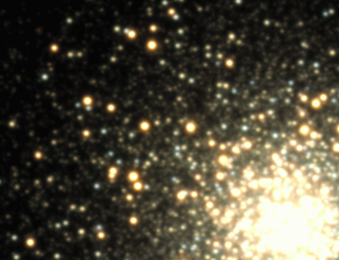

Let’s start with some simple observations of the night sky…
“Look at the night sky, what do we see?”
Here in Scotland, the answer to this questions is likely ‘clouds’, but if you are curious to know what is beyond those clouds, you can check out Stellarium (you can download it or you can use the web version).
All that glitters is not (only) stars!
Figure 2.1: An example of the night sky view taken from Stellarium
Looking at the night sky we may be able to see planets, meteors, galaxies, satellites, comets, star clusters and many stars!
Figure 2.2: An example of the night sky view taken from Stellarium (with marked typical objects)
3 What is a star?
A star is an astronomical spheroid body:
held together by self-gravity
radiating energy from an internal source (tipycally from nuclear fusion reactions, and occasionally from the release of gravitational potential energy during contraction or collapse)
Having this definition you should be able to answer the following questions:
Is the Death Star a (fictional) star?
Answer
The answer is “no”, because it does not radiate energy! The Death Star is actually a (fictional) space station orbiting the (fictional) planet moon of Endor. Enough with the fictional stuff now.
If you look at the sky you may see that planets and comets are also shining in the sky, so why can’t they be considered stars, based on the definition given above? Do they radiate energy? Are they self-gravitating?
Answer
Planets actually do not radiate, they mostly reflect the light coming from the Sun, and the same holds for comets. In addition to that, comets do not have enough mass to be considered self-gravitating objects.
3.1 Life and death of a star
A star is not a static object. During its life it will evolve, changing its internal structure and chemical composition as it ‘burns its fuel’ and changing its mass and size.
The death of a star eventually occurs when one of the conditions that define a star is no longer valid, i.e. when the star is no longer self-gravitating, or when it stops radiating having exhausted its nuclear fuel.
We will talk more about the evolution of stars in the following lectures. Now let’s go back to what we can observe having a look at the night sky and let’s see what we can tell from observations of stars.
3.2 Do all stars look the same?

Examples of stars
There are a lot of stars, not uniformly distributed
Some look brighter than others
Some are bigger than others
They have different colours
Sometimes there are coloured or dark areas around stars
Some stars have fluctuating brightness: repeating and irregular
3.3 A comparison between two stars on Stellarium
Let’s check the properties of two stars on Stellarium. What can you notice after a first look at these stars in Figure 3.1? You may notice that they have different colours (one looks white, the other one looks white-blue). The boxes contain some information about these stars, and you may recognise many of these fields in the blue boxes from positional astronomy. We will find out what the properties in the red boxes mean during this course.
Figure 3.1: Comparison between two stars on Stellarium
3.4 What can we tell from observations?
How distant are the stars?
How big are they?
How bright?
How, when and where do they form?
What are their most important characteristics?
What are they made of?
What is their energy source?
What happens when it runs out?
4 How distant are the stars?
4.1 An easy case: the distance to the Sun
How do we find the distance to the Sun?
Easy! - Just define The Astronomical Unit (a.u.) as the average distance between the Earth and the Sun!
4.2 The astronomical unit
Ok, but how big is an au? In 1976 the International Astronomical Union (IAU) adopted a standard definition whose value has been updated with increasing precision during the years. At the current date, the astronomical unit has the following value.
Astronomical unit value
1 a.u. = 149,597,870,700 m
4.2.1Question
Can you now work out how long it takes for the sunlight to reach Earth?
Solution
Code
import mathAU =149597870# kmc =299792.458# km/sts = AU/c # stm = ts/60# minprint(f"Time taken by light to reach Earth from the Sun = {ts:1.4} s = {tm:1.4} min = 8 min 19 s ")
Time taken by light to reach Earth from the Sun = 499.0 s = 8.317 min = 8 min 19 s
4.2.2 A remark on the Astronomical Unit
Note: 1 a.u. is an average distance, because the distance between the Earth and the Sun varies during the year.
Figure 4.1: Illustration of the perhelion and aphelion in Earth’s orbit around the Sun
Code
import mathAU =149597870# kmaphD =152100000# kmperD =147100000# kmAU_avg = (aphD+perD)/(2*AU) # Average distance, gives AU, check: print(f"{AU_avg}")print(f"Distance Earth-Sun at aphelion (most distant) = {aphD:1.3e} km = {aphD/AU:1.4} au")print(f"Distance Earth-Sun at perihelion (closest) = {perD:1.3e} km = {perD/AU:1.3} au")print(f"Average distance Earth-Sun = {AU:1.3e} km = 1 au")
Distance Earth-Sun at aphelion (most distant) = 1.521e+08 km = 1.017 au
Distance Earth-Sun at perihelion (closest) = 1.471e+08 km = 0.983 au
Average distance Earth-Sun = 1.496e+08 km = 1 au
4.3 Size of our solar system
Planet
Distance from Sun (a.u.)
Mercury
0.39
Venus
0.72
Earth
1
Mars
1.52
Jupiter
5.20
Saturn
9.54
Uranus
19.2
Neptune
30.06
Figure 4.2: Distances in the solar system. Planet sizes are not to scale.
4.4 Measuring the distance to the stars
4.4.1 The parallax method
We started with the easy example of answering how distant is the Sun, but what about other stars? One way to determine the distance to nearest stars is to use the parallax method.
If you look at the position of a closer object against a further background, you will notice that the image of the near object will shift in the background as you move (see Figure 4.3). This effect is called parallax and you can experience it even when you close one eye at the time looking at an object against a background.
Figure 4.3: Illustrative example of the parallax method. The background against which the yellow star object is seen changes based on the viewpoint.
Analogously, in a background of distant stars, a closer star will appear to move against them as the Earth orbits the Sun. So how do we use this to determine the distance to a start? We use trigonometry.
The angle formed between the lines of sight of a star from two positions of the observer is twice the parallax angle. Figure 4.4 shows the parallax as the angle between the lines of sight of the observer on Earth and from the Sun (the middle point between the position of Earth six months apart).
The number of stars that can be observed from Earth is limited and nowadays direct observations of the distance using the parallax method are done by satellites orbiting the Sun in sync with Earth. Hipparcos gathered data on more than one million stars, and its successor Gaia has already observed 2 billion stars!
Figure 4.4: Parallax and parsecs representation. Image readapted from: https://www.astronomy.com/wp-content/uploads/sites/2/2023/02/parsec.png
The parallax is generally measured in arcseconds (as).
A parallax of 1 arcsecond corresponds to a distance to the star of 1 parsec (3.26 light-years).
Using trigonometry, the distance \(d\) to the star, in astronomical units, is given by:
\[
d =\dfrac{1 \mathrm{au}}{\tan p}\simeq \dfrac{1}{p} \mathrm{au}
\] where \(p\) is the parallax, and for this approximation we used \(p\) measured in radians. Converting the parallax \(p\) to \(p''\), from radians to arcseconds, we obtain the distance in parsec: \[
d \simeq\dfrac{206,265 \mathrm{au}}{p''}= \dfrac{1}{p''} \mathrm{pc}
\]
The further a star is, the smaller the parallax angle.
The nearest star (Proxima Centauri) has a parallax of 0.7681 arcseconds. This is very tiny, but still, we are able to measure it! To give you an idea of how small this is:
It is approximately the angle subtended by an object having a diameter of 2 centimeters, positioned at a distance of 5.3km!
The shift produced by the parallax against the background would be \(1/2000^{th}\) the width of the Full Moon!
The parallax method is covered in other courses, so this is just a taster, but now knowing the parallax of Proxima Centauri (or another star), we can find the distance to that.
Code
import mathimport numpy as npdef arcsec_to_rad(p): rad = p/206265return radp =0.7681# asd_pc =1/p # pcp_rad = arcsec_to_rad(p)d_au =1/p_rad # aud_km = d_au*AU # kmprint(f"p = {p} as")print(f"d = 1/p pc = 1/{p} pc = {d_pc:1.1e} pc")print(f"d = 1/p pc = 206265/p au = 206265/{p} au = {d_au:1.1e} au")print(f"d = {d_au:1.1e} au * 149597870 km = {d_km:1.1e} km")print(f"The distance from Proxima Centauri is = {d_pc:1.1e} pc = {d_au:1.1e} au = {d_km:1.1e} km")
p = 0.7681 as
d = 1/p pc = 1/0.7681 pc = 1.3e+00 pc
d = 1/p pc = 206265/p au = 206265/0.7681 au = 2.7e+05 au
d = 2.7e+05 au * 149597870 km = 4.0e+13 km
The distance from Proxima Centauri is = 1.3e+00 pc = 2.7e+05 au = 4.0e+13 km
4.4.3‘Spot the mistake’ question:
An unknown star has a parallax of 379.21 mas. Your messy lecturer tried to calculate the distance to the star but she must have made some mistakes because something looks wrong. Can you tell what?
# This is the version with mistakesimport mathp =379.21/10000# as d_pc =206265/p # pcd_au =1/p # auAU =149597870# kmd_km = d_au*AU # kmprint(f"The distance to the star is = {d_pc:1.1e} pc = {d_au:1.1e} au = {d_km:1.1e} km? Something does not look right... find the mistakes!")
The distance to the star is = 5.4e+06 pc = 2.6e+01 au = 3.9e+09 km? Something does not look right… find the mistakes!
Hints
Hint 1
Check the orders of magnitude, do they seem reasonable?
Hint 2
Compare these orders of magnitude with the ones found for Proxima Centauri, any red flags?
Hint 3
The units are important!
Solution
Below is the solution to the question. Something was clearly wrong with the orders of magnitudes of the values obtained in the wrong solution:
the distance in pc can not be larger than the distance in au! Those orders of magnitude are clearly off!
if you compare this with the values obtained for Proxima Centauri, you should expect approximately the same orders of magnitude
\(10^6\) pc would be way too far to be able to use the parallax method to measure the distance: the most precise and reliable measurements of the parallax (with the Hubble Space Telescope and Gaia space mission), can measure distances of the order of \(10^3\mathrm{pc}\).
Code
# The correct versionimport mathp =379.21/1000# as <- the units conversion was wrongd_pc =1/p # pc <- This formula for the distance in pc was swapped with the one below for the distance in aud_au =206265/p # auAU =149597870# kmd_km = d_au*AU # kmprint(f"The distance to the star is = {d_pc:1.1e} pc = {d_au:1.1e} au = {d_km:1.1e} km")
The distance to the star is = 2.6e+00 pc = 5.4e+05 au = 8.1e+13 km
4.5 Transit method
The parallax was also originally proposed as a way to determine the distance to the Sun by the Scottish astronomer James Gregory, in 1663, using the transit of Venus. Gregory is seldom given any credits for this idea and usually all the credits goes to Edmund Halley for some reason (can anyone find out why?).
In 1677, at the age of 20, Halley travelled to St Helena to map the Southern Skies and observed a transit of Mercury on November 7th. Like Gregory, he suggested that the transit of a planet like Venus could be used as a method to measure the distance to the Sun, using parallax.
Here is the translation of Halley’s publication about this idea.
Figure 4.5: A composite image of the June 2004 transit of Venus as seen from Waldenburg, Germany. Credit: E. SLAWIK/SPL
Figure 4.6: Representation of the transit method
According to ‘Halley’s method’, two observers (A and B in the figure above) have to be positioned at a great distance from each other, but both located on the side of Earth facing the Sun at the time of the transit. Each observer would precisely measure the times that Venus appear to be in different positions (contact points) relative to the Sun. The observers would see different chords of the planet’s trajectory across the disk of the sun due to parallax. Venus forms two similar triangles with the Earth and the Sun at their opposite edges. Since the triangles are similar, the projected distance on the Sun can be found by comparing it to a known baseline on Earth. Once the angle shift is measured, the distances to Venus and then to the Sun can be determined using trigonometry.
Modern techniques use radar echo ranging to measure distances in the Solar System very precisely.
5 How big are stars?
5.1 How big is the Sun?
We can deduce the width of the sun if we know its angular diameter \(\alpha\) and the distance \(D\).
For small angles,
\[
\alpha \approx \frac{2R_\odot}{D}.
\]
Warning
This formula uses radians for \(\alpha\)
Since the Sun’s angular diameter is \(\alpha\approx 0.5^\circ \approx 32 \ \mathrm{arcmin} \approx 9.3\times 10^{-3} \mathrm{rad}\), and we know its distance (from Earth) \(D = 1 \mathrm{au} = 149,597,870 \ \mathrm{km}\), we can now calculate the size of the Sun using the equation above.
Code
import mathAU =149597870# kmang_diameter_arcm =32# angular diameter of Sun is about 32 minutes of arcang_diameter = ang_diameter_arcm/60* math.pi/180# ang_diameter = ang_diameter_raddiameter = AU * ang_diameterprint(f"1 au = {AU:1.3e} km")print(f"angular diameter of the sun = {ang_diameter:.3e} radians")print(f"Diameter of Sun = {diameter:.0f} km")print(f"Radius of Sun = {diameter/2:.0f} km")
1 au = 1.496e+08 km
angular diameter of the sun = 9.308e-03 radians
Diameter of Sun = 1392520 km
Radius of Sun = 696260 km
The accepted radius is \(6.957\times 10^5\) km.
5.2 What about other stars?
Here is a video showing a comparison between star sizes: https://www.youtube.com/watch?v=HEheh1BH34Q
5.2.1 A comparison of some star sizes
Here is a list of some selected examples of star radii, compared to the Sun. Some stars, such as Sirius B, are much smaller than the Sun. (Figure 5.1 below shows an artistic impression of Sirius A and Sirius B.)
The typical range of star radii is roughly \(10^{-3}R_\odot < R < 10^3 R_\odot\).
Name
Radius
Sirius B
0.008 \(R_\odot\)
Sirius A
1.71 \(R_\odot\)
Arcturus
12 \(R_\odot\)
Aldebaran
22 \(R_\odot\)
Rigel
78.9 \(R_\odot\)
Mira
210 \(R_\odot\)
Betelgeuse
320 \(R_\odot\)
Figure 5.1: Artistic impression of Sirius A (large blue-white star on the left) and Sirius B (small blue white-dwarf star on the right). Image credit: NASA, ESA and G. Bacon (STScI)
Sirius B is a very small but very hot white dwarf. It is even smaller than Earth, and it cannot be observed by the naked eye. Its companion star Sirius A, in contrast, is the brightest star in the sky
Betelgeuse – at a distance of 650 l.y. is a red supergiant and rather short-lived star, the second brightest in Orion and the ninth brightest in the sky
It’s close to the end of its life and en-route to a rather spectacular death within a million years or so
For Betelgeuse, the angular diameter \(\alpha\) is about 0.000014 degrees (\(1.4\times 10^{-5}\) degrees)
Most stars have a much smaller angular diameter and cannot be directly imaged
We have to deduce their size indirectly! (more on this later)
Figure 5.2: Betelgeuse. Image credit: ALMA (ESO/NAOJ/NRAO)/E. O’Gorman/P. Kervella
5.3 A handy guide to estimating angular diameters
You can estimate angular diameters using your hand! Extend your arm, place the hand at a right angle and follow the intstructions of Figure 5.3 to estimate different angles. This may not be useful to determine the size of objects that are very far and appear too small, such as stars, but can be useful to measure the angular distance between two stars.
Figure 5.3: How to use hands to measure angular distances in the sky
5.4 How far apart are the stars?
Let’s have a look at some orders of magnitude (this is a good resource if you want to visualise them: https://scaleofuniverse.com/en-gb).
The nearest star (Proxima Centauri) is about \(10^{16}\) m away.
Diameter of the Sun ~ \(10^{9}\) m.
The difference in scale is \(10^7\)m in distance, or \(10^{21}\)m\(^3\) in volume.
Relative to their size, stars are the most isolated structures in the universe.
If stars were grains of sand (~1 mm), they would be ~10 km apart!
However, we find them in clusters and binaries - what explains this? (more on this later)
6 How bright are stars?
If we try to answer this question based on our observations, we have to keep in mind that the apparent brightness of a light source will vary depending on its distance from the observer. The brightenss we observe is therefore not an intrinsic property of the stars, as it depends on the distance between the observer and the stars.
This is the reason why we need to differentiate between the apparent brightness of a star and its luminosity.
6.1 Apparent brightness and luminosity
The apparent brightness, \(F\), also referred to as the radiant flux or power flux, is the total amount of energy emitted by a star, per unit time, crossing an unit area (units [\(\mathrm{W/m}^2\)]). It is not an intrinsic property of a star, because it depends on the distance from the star.
Figure 6.1 can give you a better understanding of that. Each square represents an unit area. The lightbulb, like a star, radiates equally in every direction (i.e. isotropically). The ‘rays’ coming out of the light source represent the flux. The farther the position of the observer is from the source, the less flux the observer, in one unit area, will receive. The relationship between the power flux, \(F\), and the distance to the source, \(r\), is given by the inverse square law: \[F\propto \dfrac{1}{r^2}.\] Since the light source radiates isotropically (even though the figure below shows only a portion of the rays), the power flux \(F\) is equal across all parts of the sphere at a given distance.
Figure 6.1: Inverse square law of the radiant flux of a light source
The Luminosity of a star, \(L\), measured in Watts (W) or equivalently Joules per second (J/s), is its energy output per unit time. The luminosity is the total energy radiated in all the directions in an unit time and it does not depend on the distance from the observer: it is an intrinsic property of the star.
How are these two quantities related?
Imagine a sphere of radius \(r\) centered on a star, which is isotropically radiating. We saw that the luminosity (energy output per unit time) does not depend upon the distance, but the radiant flux \(F\) does. To find the power flux \(F\), we need to divide the luminosity equally over the area of the sphere, \(4\pi r^2\). Therefore \[
F = \frac{L}{4\pi r^2}
\tag{6.1}\]
The apparent brightness depends on the luminosity and on the distance of the observer from the star. From Equation 6.1, you can see how two stars of equal luminosity, located at different distances from Earth, would have different apparent brightness.
Photometry is the measurement of the quantity of light from a star, i.e. the flux of energy per unit time, per unit area, that we receive at Earth.
For a particular star, if we know the luminosity (\(L\)) of the star and its distance from Earth (\(r\)), we can calculate the radiant flux using Equation 6.1.
6.1.1 The Sun’s luminosity
For our Sun, we have:
\(F_\odot = 1361\, \mathrm{W/m^2}\) (The “Solar Constant”, or “Solar irradiance”, sometimes indicated with the symbol \(S_\odot\) in textbooks), and
\(L_\odot = 4\pi r^2 F = 3.8275 \times 10^{26}\, \mathrm{W}\)
Code
import scipyfrom scipy.constants import pi, au, parsecF =1361.0# W/m/mr = au # mL = F*4*pi*r**2print(f'Power flux: F = {F} W/m/m')print(f'r = 1au = {r:1.4e} m')print(f'Luminosity: L = F*4*pi*r**2 = {L:1.4e} W')
Power flux: F = 1361.0 W/m/m
r = 1au = 1.4960e+11 m
Luminosity: L = F*4*pi*r**2 = 3.8275e+26 W
For other stars there is a large range of luminosities:
\(10^{-4}\,L_\odot < L < 10^{6}\,L_\odot\)
If we think of the least luminous star as a 100W incandescent lightbulb, this huge range tells us that the most luminous star would be like the entire world’s power output.
Why is there this very large range? We will answer this question in the next lectures.
6.1.2‘Spot the mistake’ question:
What would the apparent brightness be for a star like the Sun at a distance of 10 pc?
Something does not seem to make sense in the answer below, why?
# This is the version containing a mistakeimport mathimport numpy as npL =3.8275E26# Wr =10#pcF = L/(4*np.pi*r**2) # W/m^2print(f'Solar luminosity: L = {L} W')print(f'Distance: r = {r} pc')print(f'Apparent brightness of the Sun at 10 parsec: F = L/(4*pi*r^2) = {F:1.4e} W/m/m')
Solar luminosity: L = 3.8275e+26 W
Distance: r = 10 pc
Apparent brightness of the Sun at 10 parsec: \(F = \frac{L}{4\pi r^2} = 3.0458\times 10^{23} W/m^2\)
Does this make sense?
Hints
Hint 1
Compare this apparent brightness obtained below with the value of the power flux used (the Solar constant) in the previous example. What is wrong?
Hint 2
Do a ‘sanity check’ of the units in the quantities used above. Does it seem correct?
Solution
If we compare this value obtained for the apparent brightness, \(F=3.046\times 10^{23} \mathrm{W/m}^2\), with the Solar constant used in the previous example, \(F_\odot = 1361 \mathrm{W/m}^2\), we can immediately notice that something is wrong by just looking at the extreme difference in the orders of magnitude. If we are observing the Sun from a further position of 10pc instead of 1au, we cannot expect it to appear brighter!
‘Sanity check’: Let’s check the units of the quantities given above, replacing them in Equation 6.1: \[ F=\frac{L}{4\pi r^2} \implies [W/m^2] = \frac{[W]}{[pc]^2} \]. This does not return an identity since \([m]\neq [pc]\), so now we know where made a mistake, by just checking the units!
To calculate the value of the flux correctly, you need to convert the distance from parsecs to meters, because the flux should be written in units of [\(W/m^2\)]!
The correct answer is:
# Correct versionimport scipyfrom scipy.constants import pi, parsecL =3.8275E26# Wr =10*parsec #mF = L/(4*pi*r**2)print(f'Solar luminosity: L = {L} W')print(f'Distance: r = {r} pc')print(f'Apparent brightness of the Sun at 10 parsec: F = L/(4*pi*r^2) = {F:1.4e} W/m/m')
Solar luminosity: L = 3.8275e+26 W
Distance: r = 10 pc = 3.0857e+17 m
Apparent brightness of the Sun at 10 parsec: \(F = \frac{L}{4\pi r^2} = 3.1989\times 10^{-10} W/m^2\).
Sanity checks
Always be careful about the units used or units conversions!
Get the habit of doing ‘sanity checks’: check the dimensional analysis and units when you use or derive formulas. This will help you spot some mistakes quickly and it is incredibly useful to rederive some formulas sometime.
In Equation 6.1 for instance, we know that the apparent brightness \(F\) has units of [W/m \(^2\)] and that the luminosity \(L\) has units of [W]. Writing the units of each side of the equation, we see that: \([W/m^2]=\dfrac{[W]}{[m^2]}\), which as expected satisfies the identity, meaning that the formula is dimensionally correct.
6.2 Stellar magnitude scales
The flux from even nearby stars is tiny, but many bright stars are distinguished by the naked eye. The human eye (like hearing) responds logarithmically to stimulus. When comparing the flux densities of three stars in a 1:10:100 ratio, the perceived brightness gap between the first and second star appears to be the same as the difference between the second and third star. This equality in perceived brightness gaps illustrates that human perception of brightness operates on a logarithmic scale. Therefore, before modern photometry, astronomers had a scale based on their own naked-eye observations: stellar (apparent) magnitude.
6.2.1 Apparent magnitude
This system to measure the stars brightness was first introduced by the Greek astronomer Hipparchos, who compiled a catalog of 850 stars with their positions and their apparent magnitudes on a scale from \(m=1\), being the brightest stars, to \(m=6\), being the faintest stars. The apparent magnitude depends on the position of the observer the same way as the flux does (in fact, we will see in the following how these two quantities are related).
The image below shows an example of a star catalog created by ancient Greek astronomers.
Figure 6.2: Almagest Ptolemy, c. 150AD image credit: Bibliothèque Nationale, Paris
The English translation reads
Figure 6.3: Almagest translated
We can still recognise the constellations and find these stars today!
Ursa Minor constellation and magnitude scale. Image credit: By IAU and Sky & Telescope magazine (Roger Sinnott & Rick Fienberg) - [1], CC BY 3.0, Link
The modern names and magnitudes for these stars are reported in the table below.
Modern Name
Magnitude
Polaris
1.98
Yildun
4.35
\(\epsilon\) Umi
4.21
Alasco
4.95
Ahfa al Farkadain
4.29
Pherkad
3.04
Kochab
2.07
Note that some of the magnitudes of the little bear stars have changed since ancient times. Partly this is because the scientific definition and measurements are more precise, but also Polaris is a variable star (its brightness changes).
The apparent magnitude scale introduced by Hipparchos has been replaced by Pogson in 1856 and is no longer limited to values between 1 and 6, it now extends between m=-26.83 for the Sun to over m=30 for the faintest object, but the new classification kept these characteristics:
5 magnitude steps correspond to a factor of 100 in apparent brightness
A difference of 1 magnitude corresponds to an apparent brightness ratio of \(100^{1/5}\simeq 2.512\), i.e. \[\dfrac{F_{m+1}}{F_m}=100^{1/5} \tag{6.2}\]
Lower magnitudes are brighter
The zero point of the apparent magnitude has been conventionally determined.
The apparent magnitude\(m\) is a measure of a star’s apparent brightness, i.e. the flux received from the star, and it therefore depends on how close the star is to the observer.
The definition of the apparent magnitude is based on the difference between magnitudes and corresponds to the ratio between two stars’ radiant fluxes, as stated in the properties above.
If we consider two stars with measured radiant fluxes (units \(W/m^2\)) \(F_1\) and \(F_2\), their apparent magnitudes will be related by \[
m_1 - m_2 = -2.5 \log_{10} \frac{F_1}{F_2}
\tag{6.3}\]
6.2.1.1 Apparent magnitude zero point convention
The values of the apparent magnitudes are determined in relation to a zero point value \(m=0\). By convention, this corresponds to the observed flux \(F_0\) below.
The apparent magnitude depends on the flux, and therefore on the intrinsic luminosity of the star and its distance (\(r\)) from Earth.
Using this zero point convention, from the nominal solar flux\[
F_\odot = 1361 \mathrm{W/m}^2,
\tag{6.6}\] we can find that the apparent magnitude of the Sun is \[
m_\odot=-26.382\ \mathrm{mag}.
\tag{6.7}\]
6.2.2 Magnitude and units
Note that the magnitude is dimensionless, so it does not have units (check this quickly doing dimensional analysis: on the right hand side you have the logarithm of a number, no units). However, to remind us that a value (e.g. \(m=-26\)) is a magnitude, you can use the notation ‘mag’ after the numerical value (e.g. \(m=-26\) mag).
Beware confusing mass and magnitude when using the same symbol \(m\)!
6.2.3Question
The coefficient in the formula for the apparent magnitude is 2.5. Why is it exactly 2.5 and not\(100^{1/5}\simeq 2.512\)?
Hint
Use the properties of logarithms.
Solution
Based on the characteristics of the apparent magnitude listed above, for two stars with apparent magnitudes \(m\) and \(m+1\), the ratio between the fluxes is \[
\frac{F_{m+1}}{F_m}=100^{1/5}.\] How can we rewrite this in a form that explicitely shows the difference between the magnitudes, \(m-(m+1)\)?
To define the zero point of the absolute magnitude (\(M=0\)), we use the same value of the zero flux, \(F_0\) (Equation 6.4), used to define the apparent magnitude \(m=0\), and we find the corresponding luminosity \(L_0\) using Equation 6.1 for \(r=10\mathrm{pc}\).
Code
from scipy.constants import pi, parsecf0 =2.518021002E-8# W/m/mr =10*parsec # mL0 =4*pi*r**2*f0 # Wprint(f'r = 10 pc = {r:1.4e} m')print(f'Conventional flux for zero apparent magnitude (m=0): F0={f0:1.4e} W/m/m')print(f'Conventional luminosity for zero absolute magnitude (M=0): L0={L0:1.4e} W')
r = 10 pc = 3.0857e+17 m
Conventional flux for zero apparent magnitude (m=0): F0=2.5180e-08 W/m/m
Conventional luminosity for zero absolute magnitude (M=0): L0=3.0128e+28 W
The zero value of the absolute magnitude, \(M=0\), corresponds to a luminosity of
Plugging Equation 6.1 into Equation 6.5, and considering that by definition the absolute magnitude is equal to the apparent magnitude at a distance \(r=10\mathrm{pc}\), we can define the absolute magnitude as
Absolute magnitude (conventional)
\[
M = -2.5 \log_{10}{\frac{L}{L_0}} = -2.5\log_{10} L + 71.1974.
\tag{6.10}\]
Using this convention, the absolute magnitude of the Sun, having a nominal solar luminosity\(L_\odot = 3.828 \times 10^{26} \mathrm{W}\), is \[
M_\odot = 4.74\mathrm{mag}.
\tag{6.11}\]
Code
from numpy import log10from astropy.constants import L_sun, L_bol0print(L_sun)print(L_bol0)L0 =3.0128E28# WM =-2.5*log10(L_sun/L_bol0)print(f'Absolute magnitude of the Sun: M_sun = {M:.2f}')
Name = Nominal solar luminosity
Value = 3.828e+26
Uncertainty = 0.0
Unit = W
Reference = IAU 2015 Resolution B 3
Name = Luminosity for absolute bolometric magnitude 0
Value = 3.0128e+28
Uncertainty = 0.0
Unit = W
Reference = IAU 2015 Resolution B 2
Absolute magnitude of the Sun: M_sun = 4.74
Caution
In different textbooks or sources (not updated to the IAU 2015 resolution), you may find different conventions for the zero points of apparent and absolute magnitudes. Consequently, you may have different values of the apparent and absolute magnitudes of the Sun (or other stars). For example, you may find that in some books the solar absolute bolometric magnitude is \(M_\odot=4.83\) instead of \(M_\odot=4.74\).
6.2.5 Setting the Absolute Magnitude scale
We will need to convert magnitudes to S.I. units of luminosity.
Based on the IAU 2015 resolution, we use the zero point luminosity previously introduced in Equation 6.9 (\(L_0=3.0128\times 10^{28}\) W) to define the absolute magnitude in Equation 6.10. Rearranging this, we find that for a star with absolute magnitude \(M\), the luminosity is given by \[
L = L_0 10^{-0.4 M}.
\tag{6.12}\]
You may notice that this definition uses only the zero point value of the luminosity defined in Equation 6.9 to relate the luminosity and absolute magnitude of a star.
Caution
Once again, some caution is needed when consulting textbooks and other sources, as conventions may change. Other (outdated) sources may use other references for the absolute magnitude \(M_2\) of Equation 6.8 instead of the zero value used in Equation 6.10 and in the derivation above. In some cases for instance you may find that the solar absolute magnitude is used: \(M_2=M_{\odot}=4.74\) (remember that even this value can change depending on the convention used, see ‘caution’ callout above.)
6.2.6Example
We can use this formula to recover the luminosity of the Sun previously used (\(L_\odot = 3.826 \times 10^{26}\mathrm{W}\)), having the absolute magnitude of the Sun, \(M_\odot = 4.74\).
Code
from astropy.constants import L_bol0M_sun =4.74print(L_bol0)L = L_bol0*10**(-0.4*M_sun)print(f'Luminosity of the Sun: L = {L:1.3e}')
Name = Luminosity for absolute bolometric magnitude 0
Value = 3.0128e+28
Uncertainty = 0.0
Unit = W
Reference = IAU 2015 Resolution B 2
Luminosity of the Sun: L = 3.828e+26 W
6.2.7Question
Show that if we have two stars with luminosities (units \(W\)) \(L_1\) and \(L_2\) at the same distance \(r=10\mathrm{pc}\), their difference in the apparent magnitudes is the same as the difference of the absolute magnitudes:
Use the relationship between flux and luminosity and the properties of logarithms.
Solution
For two stars at the same distance\(r\) (e.g. two stars in a binary), we can write \[\begin{align}
m_1 - m_2 &= -2.5\log_{10}\left(\frac{L_1}{4\pi r^2} \times \frac{4\pi r^2}{L_2} \right)\\
&= -2.5\log_{10}\frac{L_1}{L_2}
\end{align}\]
Having defined the absolute magnitude using the zero point flux above, for the i-th star (i.e. for i=1,2) with luminosities \(L_i\) at distances of 10pc, the absolute magnitude is: \(M_i = -2.5 \log_{10}{\dfrac{L_i}{L_0}}\)
For two stars at the same distance of 10pc from the observer, the difference in the apparent magnitude is equal to the difference in the absolute magnitude.
6.2.8 Relationship between apparent magnitude and absolute magnitude
By using the conventional definitions of the apparent magnitude and absolute magnitude, we can find the relationship between them:
\[\begin{align}
m &= -2.5\log_{10}{\frac{F}{F_0}} \\
&= -2.5\log_{10}\left(\frac{L}{4\pi r^2}\times \frac{4\pi (10\mathrm{pc})^2}{L_0} \right) \\
& =-2.5\log_{10}\left(\frac{L}{L_0}\right) -2.5\log_{10} \left( \frac{10\mathrm{pc}}{r}\right)^2\\
& = M -5\log_{10}(10\mathrm{pc})+5\log_{10}{r}\\
& = M -5 + 5\log_{10}{r}.
\end{align}\] Then \[
M = m + 5 - 5\log_{10} r.
\tag{6.13}\]
Warning
Careful to the units in Equation 6.13! Here \(r\) is measured in parsecs. Use this formula with caution!
6.2.9 Magnitudes, luminosity and distance
If you know a star’s apparent magnitude \(m\) and know its absolute magnitude \(M\) you can calculate its distance \(r\) (in parsec!) using \(M=m + 5 - 5\log_{10} r\).
If you know a star’s apparent magnitude and distance you can compute its luminosity
You should practice this type of conversion!
6.2.10Example
A star with apparent magnitude \(4.2\) is measured by parallax to have a distance of \(20\) parsecs. What is the absolute magnitude?
Code
from numpy import log10m=4.2r=20#pcM = m +5-5*log10(r)print(f'M = m + 5 - 5*log10(r) = {m} + 5 - log10({r:.2f})={m}+5{-log10(r)} = {M}')print(f'Absolute magnitude is {M:.2f}')
M = m + 5 - 5*log10(r) = 4.2 + 5 - log10(20.00)=4.2+5-1.3010299956639813 = 2.694850021680093
Absolute magnitude is 2.69
6.3 Notes on types of magnitude
The magnitude observed can depend on the sensitivity of the telescope or detector to the range of wavelengths. For instance, the human eye can observe in the visible part of the spectrum, but not in the IR or UV. Likewise, telescopes can have filters to observe different parts of the spectrum. Magnitude can therefore be specified for different wavelength intervals, i.e. observed with different coloured filters on the telescope.
For stars, the most commonly quoted magnitude is the visual magnitude, the magnitude in the visual part of the spectrum.
Another commonly used magnitude is the bolometric magnitude, which include the luminosity across the whole electromagnetic spectrum of wavelengths, whether observed or not. We will use this when performing some physics calculations.
One of the most common magnitude systems used in photometry is the UBV system, where magnitudes are measured through ultraviolet (U), blue (B) and visual (V) filters.
The magnitudes we mentioned so far, e.g. \(M_\odot = 4.74\), are bolometric magnitudes.
The visual magnitude \(V\) and the bolometric magnitude \(M_{bol}\) (or just \(M\)) are related by the bolometric correction BC through the formula
\[
M_{bol} - V = BC,
\tag{6.14}\]
where \(BC<0\).
In a multicolour system, such as UBV, it is useful to introduce the colour index. This is the difference between two magnitudes of that system. Considering the UBV system, for instance:
the \(U-B\) color index of a star is the difference between its ultraviolet and blue magnitudes (\(U-B=M_U-M_B\))
the \(B-V\) color index of a star is the difference between its blue and visual magnitudes (\(V-B=M_V-M_B\)).
We will come back to this again in the next chapter.
7 Recap
The distance to near stars can be determined using the parallax method
1 parsec is the distance to a star having a parallax angle of 1 arcsec
The apparent brightness of a star scales with the inverse square of the distance to the star
The luminosity of a star is the total energy emitted per unit time
The magnitude scale is logarithmic
Apparent magnitude is a measure of brightness dependent on the distance to the observer
Absolute magnitude is a measure of brightness intrinsic to the star
We can find the luminosity in S.I. units from the absolute magnitude
We can convert apparent to absolute magnitude if we know the distance to the star in parsecs
8 Stellar Colour
8.1 Why are the stars different colours?
Stars of different colours
We anticipated that stars have different colours in the first section of this chapter (see Figure 3.1), where we introduced the observed properties of stars.
Why are stars different colours?
We know that light is an electromagnetic wave, and that the colour we perceive depends on the wavelength of the light.
Figure 8.1: Linear representation of the visible light spectrum. Credits: Wikimedia
Red light has a wavelength \(\approx 650\) nm
Blue light has a wavelength \(\approx 450\) nm
White light is a mixture of all visible wavelengths
The reason why stars appear to have different colours is that they do not emit the same amount of radiation at all wavelengths: some star emit more toward the red end of the spectrum, others toward the blue end, as well as beyond the visible window, such as emission in the infrared or ultraviolet.
To understand what regulates the emission of stars at the different wavelengths, determining the colours that we observe, we need to introduce the concept of black-body.
8.2 Black body radiation
A body that totally absorbs all radiation that falls upon it is called a black-body. You can think of it as a perfect absorber of radiation.
A black body is in thermal equilibrium, so it has a temperature \(T\).
If it absorbs energy then it must also re-radiate it to stay in thermal equilibrium.
A black body is a perfect absorber but it is also a perfect emitter.
We anticipated that stars radiate different amounts of energy at different wavelengths. Let us assume that we can consider stars as black bodies.
What is the distribution of radiation across wavelengths (or frequencies) that a black body emits?
We want to know the power emitted per unit wavelength \(\lambda\), per unit area, per unit solid angle (steradian): the spectral radiance\(B_\lambda(\lambda;T)\).
For a perfect emitter, radiation is emitted:
equally from the surface of an object
isotropically over solid angle.
The emission spectra of black bodies (the energy emitted against the wavelength or frequency) depend only on their temperature \(T\).
So what is the form of the emission spectrum of a black body? Although the spectrum of black-body radiation was known observationally, its theoretical description has puzzled physicists at the end of the 19th Century and many attempts to describe this ran into trouble. It cannot be fully explained using classical physics, it requires quantum physics, as we will see in the following.
8.2.1 Rayleigh-Jeans law
Lord Rayleigh used classical physics to predict the shape of the black body spectrum, which was later refined by Sir James Jeans.
The Rayleigh-Jeans law is a good approximation to the observed spectrum at long wavelength (low frequencies) \(hc\ll k_BT\lambda\).
import warningswarnings.filterwarnings('ignore')import numpy as npfrom astropy.constants import k_B, c, hfrom matplotlib import pyplot as pltfrom matplotlib import rcrc('text',usetex=True)rc('font',size=15)rc('figure',figsize=(8,6), dpi=300)l = np.linspace(0,3000,1000) # Wavelength, nmT =4000# Temperature, KelvinB_rj=c.value*2*k_B.value * T /(l*1e-9)**4;# 1e-9 to convert from nm to metersplt.plot(l, B_rj, label="Rayleigh-Jeans law")plt.xlabel(r'Wavelength $\lambda$ (nm)')plt.ylabel(r'Spectral Radiance $B_\lambda(\lambda, T=4000K)$ (Wm$^{-3}$sr$^{-1}$)')plt.title('Spectral radiance')plt.ylim([0,1e15])plt.grid()plt.legend();
Figure 8.2: Spectral radiance plotted using the Rayleigh-Jeans law (Equation 8.1).
The Rayleigh-Jeans law has a big problem - the radiance keeps increasing indefinitely at short wavelengths (higher frequencies). If it were true the power emitted at short wavelengths would be infinite! This is known as the Ultraviolet Catastrophe, and indicates the failure of classical physics to explain the behaviour of thermal radiation.
8.2.2 Wien’s approximation
Wien’s approximation, also referred to as Wien’s law (not to be confused with ‘Wien’s displacement law’), is a good model for the observed spectrum at short wavelength (high frequencies) \(hc\gg k_BT\lambda\), but it is not accurate at high wavelengths. Wien’s approximation is described by the form below.
Figure 8.3: Comparison of the spectral radiance plotted using the Rayleigh-Jeans law (Equation 8.1) and the Wien’s approximation (Equation 8.2).
8.3 Planck’s Law
In 1900 Planck was able to derive a spectrum that fit the data by assuming that energy comes in discrete quanta of energy \(E = h\nu = hc/\lambda\), with \(h\) being a constant, Planck constant. This marked the birth of quantum physics! The Planck radiation spectrum for a black body’s spectral radiance is:
Figure 8.4: Comparison of the spectral radiance plotted using the Rayleigh-Jeans law (Equation 8.1), Wien’s approximation (Equation 8.2) and Planck’s law (Equation 8.3)
8.3.1Exercise
Show that for low frequencies (\(hc \ll \lambda k_B T\)) the Rayleigh-Jeans law can be derived from the Planck law.
Show that for high frequencies (\(hc \gg \lambda k_B T\)) Wien’s law can be derived from the Planck law.
Hint
You can use the approximation \(\lim_{x\rightarrow 0} \exp(x) = 1 + x\)
9 Temperature and colour
Let’s look at how the spectrum changes with temperature \(T\).
We can try out this PhET interactive simulator and by varying the temperature we can see how the black body spectrum changes.
The change of the spectral radiance with temperature is shown in Figure 9.1.
Code
import warningswarnings.filterwarnings('ignore')import matplotlib.pyplot as pltfor T in [6000,5500,5000,4500,4000]: B_planck =2*h.value*c.value**2* (1.0/(np.exp(h.value*c.value/(k_B.value*T*(l*1e-9)))-1)) / (l*1e-9)**5 plt.plot(l, B_planck, label='T='+str(T)+'K')plt.xlabel(r'Wavelength $\lambda$ (nm)')plt.ylabel(r'Spectral Radiance $B_\lambda(\lambda, T=4000K)$ (Wm$^{-3}$sr$^{-1}$)')plt.title('Spectral radiance at different temperatures')plt.grid()plt.legend()plt.show()
Figure 9.1: Spectral radiance at different temperatures.
From Figure 9.1 we notice that the Planck spectrum:
has a clear peak at some wavelength, which decreases as temperature increases
\(B_\lambda(\lambda;T)> 0\) for all wavelengths, but tends toward \(0\) at the extreme ends of the spectrum
overall increases with temperature
Black bodies radiate at all wavelengths - they won’t look black! The shape of the spectrum and the position of the peak determine the apparent colour of the object.
9.1 Wien’s displacement law
There is an inverse relationship between the temperature \(T\) in Kelvin and the peak emission wavelength \(\lambda_{peak}\) in metres, called Wien’s displacement law: \[
\lambda_{peak} = \frac{0.0029\,\mathrm{m\,K}}{T}
\tag{9.1}\]
Here \(\mathrm{m\,K}\) are metres \(\times\) kelvin, the units of the constant.
Note that this is different from Wien’s law, or Wien’s approximation, encountered earlier (Equation 8.2).
We can use Wien’s displacement law to determine the effective temperature of a star from the spectrum of its light, assuming it is a black body.
9.1.1Question
The Sun’s spectrum has a peak wavelength of around 500 nm, in the green part of the spectrum (see Figure 9.2). What is the effective emission temperature of the Sun?
Figure 9.2: Spectrum of Solar Radiation as seen from Earth and from above Earth’s atmosphere, and fitting of the black-body curve.
Solution
We can use Equation 9.1, after converting the peak wavelength from nm to m.
Code
w =0.0029# constant in m Klmax =500e-9# peak wavelength in metresTsun = w/lmaxprint(f'The effective temperature of the Sun is approximately {Tsun:.3f} K')
The effective temperature of the Sun is approximately 5800.000 K
The commonly used value for the emission temperature of the Sun is \(T_\odot=5780\) K. Although the peak emission is greenish, the distribution overall produces light that appears yellowish to us, after passing through the atmosphere.
9.2 Converting between wavelength and frequency
So far we have been using the spectral radiance in terms of wavelength \(B_\lambda(\lambda;T).\) It can also be expressed in terms of the frequency of the radiation \(B_\nu(\nu;T)\). Since it is a density across wavelengths, we must be careful when converting between them.
In the conversion derived above, we do not simply do a change of variable using the relationship between frequency and wavelength \(\nu = \frac{c}{\lambda}\)! In the conversion from \(B_{\lambda}\) to \(B_{\nu}\) there is a factor \[
\left|\frac{d\lambda}{d\nu}\right|=\frac{c}{\nu^2}.
\]
This is due to the fact that \[
\Delta\nu = \nu_2-\nu_1 = \frac{c}{\lambda_2}-\frac{c}{\lambda_1} \neq \frac{c}{\Delta\lambda},
\] which applies also to the infinitesimal case! Therefore we need to consider the derivative \(\frac{d\lambda}{d\nu}\).
9.3 Are stars really black bodies?
Let’s take a look at the example of the Solar spectrum of Figure 9.2.
The Planck black body spectrum is a theoretical prediction for an ideal case, which does not perfectly match the observed one with all its features, but it is usually a good fit.
Light from the Sun is obscured by the atmosphere of the Earth, which absorbs some wavelengths more than others. This is called atmospheric extinction. We will ignore this effect in this course.
There are also spectral lines, gaps in the solar spectrum. More on this later.
10 Stefan-Boltzmann Law
The total (bolometric) luminosity per area (“radiant emittance” \(j=\frac{L}{A}\)) has units of \(\mathrm{W\,m}^{-2}\), and is the spectral radiance integrated over solid angle and wavelength:
The equation for this is known as the Stefan-Boltzmann Law. \[
j = \frac{\pi^2 k_B^4 T^4}{60 \hbar^3 c^2}.
\tag{10.1}\]
This can be written more simply as
\[
j = \sigma T^4
\tag{10.2}\]
where \[
\sigma = \frac{\pi^2 k_B^4 }{60 \hbar^3 c^2} = 5.67\times 10^{-8}\mathrm{W\,m^{-2}K^{-4}}
\tag{10.3}\] is the Stefan-Boltzmann constant.
11 Stellar luminosity
We can multiply Equation 10.3 by the surface area to find the total luminosity of a spherical star of radius \(R\).
Total bolometric luminosity
\[
L = 4\pi R^2 \sigma T^4
\tag{11.1}\] This is the most useful form to use in stellar calculations - remember it!
It allows us to relate \(R\), \(L\), and \(T\) for a star.
If we know the apparent magnitude and the distance \(d\), then we can find the absolute magnitude using Equation 6.13.
If we know the absolute magnitude we can find the luminosity using Equation 6.12
If we know the luminosity and the temperature we can find the star’s radius using Equation 11.1!
You need to be able to solve these types of problem - practice it!
11.0.1Example
\(\epsilon\)-Eridani is a star at \(r=3.212\) parsecs distance, with an apparent bolometric magnitude of 3.54 and a peak emission wavelength of 570 nm. What else can we tell about it? Which other quantities can we derive?
Absolute bolometric magnitude
Knowing the apparent bolometric magnitude \(m_\epsilon\) and the distance \(r\):
from numpy import log10m =3.54r =3.212#pcM = m +5-5*log10(r)print(f'Absolute magnitude: {M:.1f}')
Absolute magnitude: 6.0
Luminosity
Knowing the absolute bolometric magnitude \(M_\epsilon\) and the zero point luminosity \(L_0\) defined in Equation 6.9, we can use Equation 6.12\[
L\epsilon = L_0 10^{-0.4 M_\epsilon}
= 3.0128 \times 10^{28} \times 10^{-0.4 \times 6.0}
= 1.2\times 10^{26} \mathrm{W}
\]
from numpy import sqrt, pisigma =5.671E-8R = sqrt(L/(4*pi*sigma*T**4))print(f'Radius: R={R:.3e}')
Radius: R=4.998e+08
12 Recap
Black bodies are perfect absorbers and emitters that absorb and emit at all wavelengths
Planck radiation law gives the shape of the black-body emission spectrum
Wien’s displacement law relates the peak emission wavelength to the temperature
Stefan-Boltzmann law can be used to find the total power radiated by a black body
Source Code
---# project:# type: book# book:# title: Stellar Physics# author: Rosaria Lena# date: 10/18/2023title: Stellar propertiesauthor: name: Dr Rosaria Lena affiliation: rosaria.lena@glasgow.ac.ukdate: last-modifieddate-format: longaffiliation-title: emaildescription: _Lectures 1-3_ (part 1.1). title-block-banner: truejupyter: python3execute: echo: true freeze: auto--------------# Look at the night sky, what do we see?Let's start with some simple observations of the night sky..."Look at the night sky, what do we see?"Here in Scotland, the answer to this questions is likely 'clouds', but if you are curious to know what is beyond those clouds, you can check out Stellarium (you can download it or you can use the [web version](https://stellarium-web.org/)).All that glitters is not (only) stars!{#fig-Stellarium}Looking at the night sky we may be able to see planets, meteors, galaxies, satellites, comets, star clusters and many stars!{#fig-Stellarium-marked}# What is a star?A star is an astronomical spheroid body:- held together by _self-gravity_- _radiating_ energy from an internal source (tipycally from nuclear fusion reactions, and occasionally from the release of gravitational potential energy during contraction or collapse)Having this definition you should be able to answer the following questions:1. Is the Death Star a (fictional) star?<details><summary> Answer </summary>The answer is "no", because it does not radiate energy! The Death Star is actually a (fictional) space station orbiting the (fictional) planet moon of Endor.Enough with the fictional stuff now.</details>2. If you look at the sky you may see that planets and comets are also shining in the sky, so why can't they be considered stars, based on the definition given above? Do they radiate energy? Are they self-gravitating?<details><summary> Answer </summary>Planets actually do not _radiate_, they mostly reflect the light coming from the Sun, and the same holds for comets. In addition to that, comets do not have enough mass to be considered self-gravitating objects.</details>## Life and death of a starA star is not a static object. During its life it will evolve, changing its internal structure and chemical composition as it 'burns its _fuel_' and changing its mass and size.The death of a star eventually occurs when one of the conditions that define a star is no longer valid, i.e. when the star is no longer self-gravitating, or when it stops radiating having exhausted its nuclear fuel.We will talk more about the evolution of stars in the following lectures.Now let's go back to what we can observe having a look at the night sky and let's see what we can tell from observations of stars.## Do all stars look the same?<imgsrc="img/intro2.png"width="600"height="600"/>- There are a lot of stars, not uniformly distributed- Some look brighter than others- Some are bigger than others- They have different colours- Sometimes there are coloured or dark areas around stars- Some stars have fluctuating brightness: repeating and irregular## A comparison between two stars on StellariumLet's check the properties of two stars on Stellarium. What can you notice after a first look at these stars in @fig-Stellarium-stars-compare?You may notice that they have different colours (one looks white, the other one looks white-blue). The boxes contain some information about these stars, and you may recognise many of these fields in the blue boxes from positional astronomy. We will find out what the properties in the red boxes mean during this course.{#fig-Stellarium-stars-compare}## What can we tell from observations?- How distant are the stars?- How big are they?- How bright?- How, when and where do they form?- What are their most important characteristics?- What are they made of?- What is their energy source?- What happens when it runs out?# How distant are the stars?## An easy case: the distance to the Sun__How do we find the distance to the Sun?__Easy! - Just define The Astronomical Unit (a.u.) as the average distance between the Earth and the Sun!## The astronomical unitOk, but how big is an au?In 1976 the International Astronomical Union (IAU) adopted a standard definition whose value has been updated with increasing precision during the years. At the current date, the astronomical unit has the following value.::: {.callout-note appearance="simple"}## Astronomical unit value1 a.u. = 149,597,870,700 m:::### <span style="color:#336699;">Question</span>Can you now work out how long it takes for the sunlight to reach Earth?<details><summary> Solution </summary>```{python}#| slideshow: {slide_type: fragment}import mathAU =149597870# kmc =299792.458# km/sts = AU/c # stm = ts/60# minprint(f"Time taken by light to reach Earth from the Sun = {ts:1.4} s = {tm:1.4} min = 8 min 19 s ")```</details>### A remark on the Astronomical UnitNote: 1 a.u. is an _average_ distance, because the distance between the Earth and the Sun varies during the year.{#fig-perhelion-aphelion}<!-- <div><img src="img/Earth-orbit-Sun_fixed.png" width="700" height="500"/></div> -->```{python}#| slideshow: {slide_type: fragment}import mathAU =149597870# kmaphD =152100000# kmperD =147100000# kmAU_avg = (aphD+perD)/(2*AU) # Average distance, gives AU, check: print(f"{AU_avg}")print(f"Distance Earth-Sun at aphelion (most distant) = {aphD:1.3e} km = {aphD/AU:1.4} au")print(f"Distance Earth-Sun at perihelion (closest) = {perD:1.3e} km = {perD/AU:1.3} au")print(f"Average distance Earth-Sun = {AU:1.3e} km = 1 au")```## Size of our solar system| Planet | Distance from Sun (a.u.) || ------ | ----------------- || Mercury | 0.39 || Venus | 0.72 || Earth | 1 || Mars | 1.52 || Jupiter | 5.20 || Saturn | 9.54 || Uranus | 19.2 || Neptune | 30.06 |{#fig-solar-distances}<!-- <img src="img/Solar_system_distances.png" style="max-height: 300px; base64; display: block; position:relative; float:centre; padding-right:0.5cm"/> -->## Measuring the distance to the stars### The parallax methodWe started with the easy example of answering how distant is the Sun, but what about other stars? One way to determine the distance to nearest stars is to use the _parallax method_.If you look at the position of a closer object against a further background, you will notice that the image of the near object will shift in the background as you move (see @fig-parallax1). This effect is called parallax and you can experience it even when you close one eye at the time looking at an object against a background.<!-- <div><img src="img/Parallax_Example.png" width="700"/></div> -->{#fig-parallax1}Analogously, in a background of distant stars, a closer star will appear to move against them as the Earth orbits the Sun. So how do we use this to determine the distance to a start? We use trigonometry.The angle formed between the lines of sight of a star from two positions of the observer is twice the parallax angle.@fig-parallax2 shows the parallax as the angle between the lines of sight of the observer on Earth and from the Sun (the middle point between the position of Earth six months apart).The number of stars that can be observed from Earth is limited and nowadays _direct_ observations of the distance using the parallax method are done by satellites orbiting the Sun in sync with Earth. Hipparcos gathered data on more than one million stars, and its successor Gaia has already observed 2 billion stars!<!-- <img src="img/parallax_parsecs.webp" style="max-height: 600px; display: block; position:relative; float:right; padding-left:.5cm"> -->{#fig-parallax2}<!-- $\begin{equation} --><!-- \end{equation}$ -->- The parallax is generally measured in arcseconds (_as_).:::{.callout-note appearance="simple"}## Arcseconds - degrees - radians conversion$$ \mathrm{1 arcsecond} = \dfrac{1}{3600} \deg = \dfrac{1}{206,265} \mathrm{radians}.$$You can show these conversions by recalling that$$ 1\ \mathrm{rad} = 57.3\deg = (57.3\times 60\times 60)\ \mathrm{as}=206,265\ \mathrm{as}.$$::::::{.callout-note appearance="simple"}## Parsec definition- The parsec (**par**allax-**sec**ond, _pc_) is defined as:\begin{align*}1\ \mathrm{parsec} &= \dfrac{1 \mathrm{au}}{\mathrm{arcsecond\ in\ radians}} = 206,265\mathrm{au}= \dfrac{648000}{\pi} \mathrm{au}\\ &\approx 3.086\times 10^{16}\mathrm{m}.\end{align*}:::- A parallax of 1 arcsecond corresponds to a distance to the star of 1 parsec (3.26 light-years).- Using trigonometry, the distance $d$ to the star, in astronomical units, is given by:$$ d =\dfrac{1 \mathrm{au}}{\tan p}\simeq \dfrac{1}{p} \mathrm{au} $$where $p$ is the parallax, and for this approximation we used $p$ measured in radians.Converting the parallax $p$ to $p''$, from radians to arcseconds, we obtain the distance in parsec:$$ d \simeq\dfrac{206,265 \mathrm{au}}{p''}= \dfrac{1}{p''} \mathrm{pc} $$```{python}import numpy as npimport mathAU =149597870# kmpc =648000/np.pi*AU # kmprint(f"1parsec = {pc:1.3e} km")```### The nearest star: Proxima CentauriThe further a star is, the smaller the parallax angle.The nearest star (Proxima Centauri) has a parallax of 0.7681 arcseconds. This is _very_ tiny, but still, we are able to measure it! To give you an idea of how small this is:- It is approximately the angle subtended by an object having a diameter of 2 centimeters, positioned at a distance of 5.3km!- The shift produced by the parallax against the background would be $1/2000^{th}$ the width of the Full Moon!The parallax method is covered in other courses, so this is just a taster, but now knowing the parallax of Proxima Centauri (or another star), we can find the distance to that.```{python}import mathimport numpy as npdef arcsec_to_rad(p): rad = p/206265return radp =0.7681# asd_pc =1/p # pcp_rad = arcsec_to_rad(p)d_au =1/p_rad # aud_km = d_au*AU # kmprint(f"p = {p} as")print(f"d = 1/p pc = 1/{p} pc = {d_pc:1.1e} pc")print(f"d = 1/p pc = 206265/p au = 206265/{p} au = {d_au:1.1e} au")print(f"d = {d_au:1.1e} au * 149597870 km = {d_km:1.1e} km")print(f"The distance from Proxima Centauri is = {d_pc:1.1e} pc = {d_au:1.1e} au = {d_km:1.1e} km")```### <span style="color:#336699;">'Spot the mistake' question:</span>An unknown star has a parallax of 379.21 mas. Your messy lecturer tried to calculate the distance to the star but she must have made some mistakes because something looks wrong. Can you tell what?```python# This is the version with mistakesimport mathp =379.21/10000# as d_pc =206265/p # pcd_au =1/p # auAU =149597870# kmd_km = d_au*AU # kmprint(f"The distance to the star is = {d_pc:1.1e} pc = {d_au:1.1e} au = {d_km:1.1e} km? Something does not look right... find the mistakes!")```The distance to the star is = 5.4e+06 pc = 2.6e+01 au = 3.9e+09 km? Something does not look right... find the mistakes!::: {.callout-tip collapse="true"}## Hints<details><summary>Hint 1</summary>Check the orders of magnitude, do they seem reasonable?</details><details><summary>Hint 2</summary>Compare these orders of magnitude with the ones found for Proxima Centauri, any red flags?</details><details><summary>Hint 3</summary>The units are important!</details>:::<!-- ```{python}# The version with mistakes, where I made a wrong units conversion and I swapped the formulas for d in pc and in auimport warningswarnings.filterwarnings('ignore')import mathp = 379.21/10000 # as d_pc = 206265/p # pcd_au = 1/p # auAU = 149597870 # kmd_km = d_au*AU # kmprint(f"The distance to the star is = {d_pc:1.1e} pc = {d_au:1.1e} au = {d_km:1.1e} km? Something does not look right... find the mistakes!") --><details><summary> __Solution__ </summary>Below is the solution to the question. Something was clearly wrong with the orders of magnitudes of the values obtained in the wrong solution:- the distance in pc can not be larger than the distance in au! Those orders of magnitude are clearly off!- if you compare this with the values obtained for Proxima Centauri, you should expect approximately the same orders of magnitude- $10^6$ pc would be way too far to be able to use the parallax method to measure the distance: the most precise and reliable measurements of the parallax (with the Hubble Space Telescope and Gaia space mission), can measure distances of the order of $10^3\mathrm{pc}$.<!-- ```python # The correct versionimport warningswarnings.filterwarnings('ignore')import mathp = 379.21/1000 # as <- the units conversion was wrongd_pc = 1/p # pc <- This formula for the distance in pc was swapped with the one below for the distance in aud_au = 206265/p # au <-AU = 149597870 # kmd_km = d_au*AU # kmprint(f"The distance to the star is = {d_pc:1.1e} pc = {d_au:1.1e} au = {d_km:1.1e} km```The distance to the star is = 2.6e+00 pc = 5.4e+05 au = 8.1e+13 km -->```{python}# The correct versionimport mathp =379.21/1000# as <- the units conversion was wrongd_pc =1/p # pc <- This formula for the distance in pc was swapped with the one below for the distance in aud_au =206265/p # auAU =149597870# kmd_km = d_au*AU # kmprint(f"The distance to the star is = {d_pc:1.1e} pc = {d_au:1.1e} au = {d_km:1.1e} km")```</details>## Transit method<imgsrc="img/HalGreg.jpg"style="max-height: 200px; display:block; position:relative; float:left; padding-right:1cm">The parallax was also originally proposed as a way to determine the distance to the Sun by the Scottish astronomer James Gregory, in 1663, using the transit of Venus. Gregory is seldom given any credits for this idea and usually all the credits goes to Edmund Halley for some reason (can anyone find out why?).In 1677, at the age of 20, Halley travelled to St Helena to map the Southern Skies and observed a transit of Mercury on November 7th.Like Gregory, he suggested that the transit of a planet like Venus could be used as a method to measure the distance to the Sun, using parallax.[Here](https://eclipse.gsfc.nasa.gov/transit/HalleyParallax.html) is the translation of Halley's publication about this idea.{#fig-Venus-transit}<!-- <img src="img/VenusTransit.png" style="max-height: 500px; display: block; position:relative; float:left; padding-right:1cm"> -->{#fig-transit-method}According to 'Halley's method', two observers (A and B in the figure above) have to be positioned at a great distance from each other, but both located on the side of Earth facing the Sun at the time of the transit. Each observer would precisely measure the times that Venus appear to be in different positions (contact points) relative to the Sun. The observers would see different chords of the planet's trajectory across the disk of the sun due to parallax. Venus forms two similar triangles with the Earth and the Sun at their opposite edges. Since the triangles are similar, the projected distance on the Sun can be found by comparing it to a known baseline on Earth. Once the angle shift is measured, the distances to Venus and then to the Sun can be determined using trigonometry.Modern techniques use radar echo ranging to measure distances in the Solar System very precisely.<!-- Venus forms two similar triangles with the Earth and the Sun at their opposite edges. Since the triangles are similar, the projected distance on the Sun can be found by comparing to a known baseline on Earth. --># How big are stars?## How big is the Sun?<!-- {#fig-angular-diameter width=25% fig-align="right" fig-alt="Geometrical configuration of the Sun as seen from an observer at distance D."} --><imgstyle="float: right; max-height: 350px; position:relative;"src="img/AngularDiameter.png">We can deduce the width of the sun if we know its angular diameter $\alpha$ and the distance $D$.For small angles,$$ \alpha \approx \frac{2R_\odot}{D}.$$:::{.callout-warning}This formula uses _radians_ for $\alpha$:::Since the Sun's angular diameter is $\alpha\approx 0.5^\circ \approx 32 \ \mathrm{arcmin} \approx 9.3\times 10^{-3} \mathrm{rad}$,and we know its distance (from Earth)$D = 1 \mathrm{au} = 149,597,870 \ \mathrm{km}$, we can now calculate the size of the Sun using the equation above.```{python}#| slideshow: {slide_type: fragment}import mathAU =149597870# kmang_diameter_arcm =32# angular diameter of Sun is about 32 minutes of arcang_diameter = ang_diameter_arcm/60* math.pi/180# ang_diameter = ang_diameter_raddiameter = AU * ang_diameterprint(f"1 au = {AU:1.3e} km")print(f"angular diameter of the sun = {ang_diameter:.3e} radians")print(f"Diameter of Sun = {diameter:.0f} km")print(f"Radius of Sun = {diameter/2:.0f} km")```The accepted radius is $6.957\times 10^5$ km.## What about other stars?Here is a video showing a comparison between star sizes: https://www.youtube.com/watch?v=HEheh1BH34Q<iframewidth="560"height="315"src="https://www.youtube-nocookie.com/embed/HEheh1BH34Q?si=BQb-tLiTvei87S7Q"title="YouTube video player"frameborder="0"allow="accelerometer; autoplay; clipboard-write; encrypted-media; gyroscope; picture-in-picture; web-share"allowfullscreen></iframe>### A comparison of some star sizesHere is a list of some selected examples of star radii, compared to the Sun.Some stars, such as Sirius B, are much smaller than the Sun. (@fig-siriusAB below shows an artistic impression of Sirius A and Sirius B.)The typical range of star radii is roughly $10^{-3}R_\odot < R < 10^3 R_\odot$.| Name | Radius ||------|--------|| Sirius B | 0.008 $R_\odot$|| Sirius A | 1.71 $R_\odot$|| Arcturus | 12 $R_\odot$ || Aldebaran | 22 $R_\odot$ || Rigel | 78.9 $R_\odot$|| Mira | 210 $R_\odot$ || Betelgeuse | 320 $R_\odot$ |<!-- <img src="img/siriusAB.jpeg" style="max-height: 500px; display: block; position:relative; float:right; padding-right:1cm"> -->{#fig-siriusAB}- Sirius B is a very small but very hot white dwarf. It is even smaller than Earth, and it cannot be observed by the naked eye. Its companion star Sirius A, in contrast, is the brightest star in the sky- Betelgeuse – at a distance of 650 l.y. is a red supergiant and rather short-lived star, the second brightest in Orion and the ninth brightest in the sky- It’s close to the end of its life and en-route to a rather spectacular death within a million years or so- For Betelgeuse, the angular diameter $\alpha$ is about 0.000014 degrees ($1.4\times 10^{-5}$ degrees)- Most stars have a much smaller angular diameter and cannot be directly imaged- We have to deduce their size indirectly! (more on this later){#fig-betelgeuse}## A handy guide to estimating angular diametersYou can estimate angular diameters using your hand! Extend your arm, place the hand at a right angle and follow the intstructions of @fig-handy-guide to estimate different angles.This may not be useful to determine the size of objects that are very far and appear too small, such as stars, but can be useful to measure the angular distance between two stars.{#fig-handy-guide}## How far apart are the stars?Let's have a look at some orders of magnitude (this is a good resource if you want to visualise them: https://scaleofuniverse.com/en-gb).- The nearest star (Proxima Centauri) is about $10^{16}$ m away.- Diameter of the Sun ~ $10^{9}$ m.- The difference in scale is $10^7$m in distance, or $10^{21}$m$^3$ in volume.- Relative to their size, stars are the most isolated structures in the universe.- If stars were grains of sand (~1 mm), they would be ~10 km apart!- However, we find them in clusters and binaries - what explains this? (more on this later)# How bright are stars?If we try to answer this question based on our observations, we have to keep in mind that the apparent brightness of a light source will vary depending on its distance from the observer. The brightenss we observe is therefore not an _intrinsic_ property of the stars, as it depends on the distance between the observer and the stars.This is the reason why we need to differentiate between the _apparent brightness_ of a star and its _luminosity_.## Apparent brightness and luminosityThe __apparent brightness__, $F$, also referred to as the _radiant flux_ or _power flux_, is the total amount of energy emitted by a star, per unit time, crossing an unit area (units [$\mathrm{W/m}^2$]).It is _not_ an intrinsic property of a star, because it depends on the distance from the star.@fig-inverse-square-law can give you a better understanding of that. Each square represents an unit area. The lightbulb, like a star, radiates equally in every direction (i.e. isotropically). The 'rays' coming out of the light source represent the flux. The farther the position of the observer is from the source, the less flux the observer, in one unit area, will receive. The relationship between the power flux, $F$, and the distance to the source, $r$, is given by the inverse square law: $$F\propto \dfrac{1}{r^2}.$$Since the light source radiates isotropically (even though the figure below shows only a portion of the rays), the power flux $F$ is equal across all parts of the sphere at a given distance.{#fig-inverse-square-law}The __Luminosity__ of a star, $L$, measured in Watts (W) or equivalently Joules per second (J/s), is its energy output per unit time. The luminosity is the _total_ energy radiated in all the directions in an unit time and it does not depend on the distance from the observer: it is an _intrinsic_ property of the star.How are these two quantities related?Imagine a sphere of radius $r$ centered on a star, which is isotropically radiating. We saw that the luminosity (energy output per unit time) does not depend upon the distance, but the radiant flux $F$ does. To find the power flux $F$, we need to divide the luminosity equally over the area of the sphere, $4\pi r^2$. Therefore$$F = \frac{L}{4\pi r^2}$${#eq-flux}The apparent brightness depends on the luminosity and on the distance of the observer from the star. From @eq-flux, you can see how two stars of equal luminosity, located at different distances from Earth, would have different apparent brightness._Photometry_ is the measurement of the quantity of light from a star, i.e. the flux of energy per unit time, per unit area, that we receive at Earth.For a particular star, if we know the luminosity ($L$) of the star and its distance from Earth ($r$), we can calculate the radiant flux using @eq-flux.### The Sun's luminosityFor our Sun, we have:$F_\odot = 1361\, \mathrm{W/m^2}$ (The "Solar Constant", or "Solar irradiance", sometimes indicated with the symbol $S_\odot$ in textbooks), and$r = 1\, \mathrm{a.u.} \approx 1.5\times 10^{11}\mathrm{m}$.Therefore, using @eq-flux:$L_\odot = 4\pi r^2 F = 3.8275 \times 10^{26}\, \mathrm{W}$```{python}#| slideshow: {slide_type: skip}import scipyfrom scipy.constants import pi, au, parsecF =1361.0# W/m/mr = au # mL = F*4*pi*r**2print(f'Power flux: F = {F} W/m/m')print(f'r = 1au = {r:1.4e} m')print(f'Luminosity: L = F*4*pi*r**2 = {L:1.4e} W')```For other stars there is a large range of luminosities:$10^{-4}\,L_\odot < L < 10^{6}\,L_\odot$If we think of the least luminous star as a 100W incandescent lightbulb, this huge range tells us that the most luminous star would be like the entire world’s power output.Why is there this very large range? We will answer this question in the next lectures.### <span style="color:#336699;">'Spot the mistake' question:</span>What would the apparent brightness be for a star like the Sun at a distance of 10 pc?Something does not seem to make sense in the answer below, why?```python# This is the version containing a mistakeimport mathimport numpy as npL =3.8275E26# Wr =10#pcF = L/(4*np.pi*r**2) # W/m^2print(f'Solar luminosity: L = {L} W')print(f'Distance: r = {r} pc')print(f'Apparent brightness of the Sun at 10 parsec: F = L/(4*pi*r^2) = {F:1.4e} W/m/m')```Solar luminosity: L = 3.8275e+26 WDistance: r = 10 pcApparent brightness of the Sun at 10 parsec: $F = \frac{L}{4\pi r^2} = 3.0458\times 10^{23} W/m^2$<!-- ```python# This is the version containing a mistakeL = 3.8275E26 # Wr = 10 #pcF = L/(4*pi*r**2)print(f'Solar luminosity = {L} W')print(f'Distance r = {r} pc')print(f'Apparent brightness of the Sun at 10 parsec: F = {F} W/m/m') --><!-- ```Solar luminosity = 3.8275e+26 WDistance r = 10 pcApparent brightness of the Sun at 10 parsec: F = 3.0458e+23 W/m/m``` -->Does this make sense?::: {.callout-tip collapse="true"}## Hints<details><summary>Hint 1</summary>Compare this apparent brightness obtained below with the value of the power flux used (the Solar constant) in the previous example. What is wrong?</details><details><summary>Hint 2</summary>Do a 'sanity check' of the units in the quantities used above. Does it seem correct?</details>:::<details><summary>Solution</summary>If we compare this value obtained for the apparent brightness, $F=3.046\times 10^{23} \mathrm{W/m}^2$, with the Solar constant used in the previous example, $F_\odot = 1361 \mathrm{W/m}^2$, we can immediately notice that something is wrong by just looking at the extreme difference in the orders of magnitude. If we are observing the Sun from a further position of 10pc instead of 1au, we cannot expect it to appear brighter!_'Sanity check'_: Let's check the units of the quantities given above, replacing them in @eq-flux:$$ F=\frac{L}{4\pi r^2} \implies [W/m^2] = \frac{[W]}{[pc]^2} $$.This does not return an identity since $[m]\neq [pc]$, so now we know where made a mistake, by just checking the units!To calculate the value of the flux correctly, you need to convert the distance from parsecs to meters, because the flux should be written in units of [$W/m^2$]!The correct answer is:```python# Correct versionimport scipyfrom scipy.constants import pi, parsecL =3.8275E26# Wr =10*parsec #mF = L/(4*pi*r**2)print(f'Solar luminosity: L = {L} W')print(f'Distance: r = {r} pc')print(f'Apparent brightness of the Sun at 10 parsec: F = L/(4*pi*r^2) = {F:1.4e} W/m/m')```Solar luminosity: L = 3.8275e+26 WDistance: r = 10 pc = 3.0857e+17 mApparent brightness of the Sun at 10 parsec: $F = \frac{L}{4\pi r^2} = 3.1989\times 10^{-10} W/m^2$.</details>:::{.callout-caution collapse="false"}## Sanity checksAlways be careful about the units used or units conversions!Get the habit of doing 'sanity checks': check the dimensional analysis and units when you use or derive formulas. This will help you spot some mistakes quickly and it is incredibly useful to rederive some formulas sometime.:::In @eq-flux for instance, we know that the apparent brightness $F$ has units of [W/m $^2$] and that the luminosity $L$ has units of [W]. Writing the units of each side of the equation, we see that:$[W/m^2]=\dfrac{[W]}{[m^2]}$, which as expected satisfies the identity, meaning that the formula is dimensionally correct.## Stellar magnitude scalesThe flux from even nearby stars is tiny, but many bright stars are distinguished by the naked eye. The human eye (like hearing) responds logarithmically to stimulus. When comparing the flux densities of three stars in a 1:10:100 ratio, the perceived brightness gap between the first and second star appears to be the same as the difference between the second and third star. This equality in perceived brightness gaps illustrates that human perception of brightness operates on a logarithmic scale. Therefore, before modern photometry, astronomers had a scale based on their own naked-eye observations: __stellar (apparent) magnitude__.### Apparent magnitudeThis system to measure the stars brightness was first introduced by the Greek astronomer Hipparchos, who compiled a catalog of 850 stars with their positions and their _apparent magnitudes_ on a scale from $m=1$, being the brightest stars, to $m=6$, being the faintest stars.The apparent magnitude depends on the position of the observer the same way as the flux does (in fact, we will see in the following how these two quantities are related).The image below shows an example of a star catalog created by ancient Greek astronomers.{#fig-Almagest}The English translation reads{#fig-Almagest-translated}We can still recognise the constellations and find these stars today!![<small>Ursa Minor constellation and magnitude scale. Image credit: By IAU and Sky & Telescope magazine (Roger Sinnott & Rick Fienberg) - <a rel="nofollow" class="external autonumber" href="http://www.iau.org/public/constellations/">[1]</a>, <ahref="https://creativecommons.org/licenses/by/3.0"title="Creative Commons Attribution 3.0">CC BY 3.0</a>, <ahref="https://commons.wikimedia.org/w/index.php?curid=15412502">Link</a></small>](img/littlebear.svg)The modern names and magnitudes for these stars are reported in the table below.| Modern Name | Magnitude ||-------------|-----------|| Polaris | 1.98 ||Yildun | 4.35 || $\epsilon$ Umi | 4.21 || Alasco | 4.95 || Ahfa al Farkadain | 4.29 || Pherkad | 3.04 || Kochab | 2.07 |Note that some of the magnitudes of the little bear stars have changed since ancient times. Partly this is because the scientific definition and measurements are more precise, but also Polaris is a variable star (its brightness changes).The apparent magnitude scale introduced by Hipparchos has been replaced by Pogson in 1856 and is no longer limited to values between 1 and 6, it now extends between m=-26.83 for the Sun to over m=30 for the faintest object, but the new classification kept these characteristics:- 5 magnitude steps correspond to a factor of 100 in apparent brightness- A difference of 1 magnitude corresponds to an apparent brightness ratio of $100^{1/5}\simeq 2.512$, i.e. $$\dfrac{F_{m+1}}{F_m}=100^{1/5}$${#eq-magnitude-flux-ratio}- Lower magnitudes are _brighter_- The zero point of the apparent magnitude has been _conventionally_ determined.<!-- This is not part of the S.I. system you are familiar with, but it is still widespread in astronomy today. We will learn how to use it in our calculations and relate it to S.I. units. -->The _apparent magnitude_ $m$ is a measure of a star's apparent brightness, i.e. the flux received from the star, and it therefore depends on how close the star is to the observer.The definition of the apparent magnitude is based on the difference between magnitudes and corresponds to the ratio between two stars' radiant fluxes, as stated in the properties above.If we consider two stars with measured radiant fluxes (units $W/m^2$) $F_1$ and $F_2$, their apparent magnitudes will be related by$$m_1 - m_2 = -2.5 \log_{10} \frac{F_1}{F_2}$${#eq-apparent-magnitude}#### Apparent magnitude zero point conventionThe values of the apparent magnitudes are determined in relation to a zero point value $m=0$. By convention, this corresponds to the observed flux $F_0$ below.::: {.callout-note appearance="minimalist" icon=false}## Zero point flux (conventional)$$F_0 = 2.518 × 10^{−8} \ \mathrm{W m}^{−2}.$${#eq-zero-point-flux}(Reference: [IAU 2015 resolution](https://www.iau.org/static/resolutions/IAU2015_English.pdf)):::The apparent magnitude of a star is therefore conventionally defined as::: {.callout-note style="simple"}## Apparent magnitude (conventional)$$m = -2.5 \log_{10}{\frac{F}{F_0}} = -2.5 \log_{10}{F} - 18.997$${#eq-apparent-magnitude-convention}:::The apparent magnitude depends on the flux, and therefore on the intrinsic luminosity of the star and its distance ($r$) from Earth.Using this zero point convention, from the _nominal solar flux_$$F_\odot = 1361 \mathrm{W/m}^2,$${#eq-sun-flux}we can find that the apparent magnitude of the Sun is$$m_\odot=-26.382\ \mathrm{mag}.$${#eq-sun-apparent-magnitude}### Magnitude and unitsNote that the magnitude is _dimensionless_, so it does not have units (check this quickly doing dimensional analysis: on the right hand side you have the logarithm of a number, no units). However, to remind us that a value (e.g. $m=-26$) is a magnitude, you can use the notation 'mag' after the numerical value (e.g. $m=-26$ mag).::: {.callouts-caution}Beware confusing mass and magnitude when using the same symbol $m$!:::### <span style="color:#336699;">Question</span>The coefficient in the formula for the apparent magnitude is 2.5. Why is it exactly 2.5 and _not_ $100^{1/5}\simeq 2.512$?:::{.callout-tip collapse=true}## HintUse the properties of logarithms.:::<details><summary>Solution</summary>Based on the characteristics of the apparent magnitude listed above, for two stars with apparent magnitudes $m$ and $m+1$, the ratio between the fluxes is $$\frac{F_{m+1}}{F_m}=100^{1/5}.$$How can we rewrite this in a form that explicitely shows the difference between the magnitudes, $m-(m+1)$?\begin{align}\dfrac{F_{m+1}}{F_m}=100^{1/5} &\implies \log_{10}{\dfrac{F_{m+1}}{F_m}}=\log_{10}{10^{2/5}}=\frac{2}{5}\log_{10}{10}=\frac{2}{5}\\ &\implies \frac{5}{2}\log_{10}{\dfrac{F_{m+1}}{F_m}} = 1 = (m+1) - m \\&\implies m-(m+1)=-2.5\log_{10}{\dfrac{F_m}{F_{m+1}}}\end{align}You can see that the factor 2.5 comes from the ratio 5/2 in the derivation of the formula for the apparent magnitude (see the first passage).<!-- Note that the coefficient in the formula above for the apparent magnitude is 2.5 and _not_ 2.518! Why 2.5? Consider that the flux goes as $r^{-2}$, so $r\propto F^{-1/2}$.Plug into the apparent magnitude formula and the $1/2$ divides the $5$ into $2.5$. --><!-- ### QuestionShow that if we have two stars with measured fluxes (units $W/m^2$) $F_1$ and $F_2$, their magnitudes will be related by\begin{align}m_1 - m_2 = -2.5 \log_10_10_{10} \frac{F_1}{F_2}\end{align} --><!-- __Hint:__Use the properties of logarithms.__Solution:__Having defined the apparent magnitude using the zero point flux above, for the i-th star (i.e. for i=1,2) with flux $F_i$, the apparent magnitude is:$m_i = -2.5 \log{\dfrac{F_i}{F_0}}$Therefore:\begin{align*}m_1 - m_2 & = -2.5 \log{\frac{F_1}{F_0}} - \left(-2.5 \log{\frac{F_2}{F_0}}\right) \\& = -2.5\log F_1 - ( -2.5\log F_0) - ( -2.5\log F_2 - ( -2.5\log F_0)) \\& = -2.5 \log F_1 + 2.5 \log F_2\\& = -2.5 \log{\frac{F_1}{F_2}}\end{align*} -->### Absolute MagnitudeAbsolute magnitude (M) is a measure solely of the star's intrinsic luminosity $L,$ so it does _not_ depend on its distance to the observer.It is conventionally defined as the apparent magnitude of a star at a distance $r=10\mathrm{pc}$.If we consider two stars with luminosities $L_1$ and $L_2$, their absolute magnitudes will be related by$$M_1 - M_2 = -2.5\log_{10}\dfrac{L_1}{L_2}.$${#eq-absolute-magnitude}#### Absolute magnitude zero point conventionTo define the zero point of the absolute magnitude ($M=0$), we use the same value of the zero flux, $F_0$ (@eq-zero-point-flux), used to define the apparent magnitude $m=0$, and we find the corresponding luminosity $L_0$ using @eq-flux for $r=10\mathrm{pc}$.```{python}from scipy.constants import pi, parsecf0 =2.518021002E-8# W/m/mr =10*parsec # mL0 =4*pi*r**2*f0 # Wprint(f'r = 10 pc = {r:1.4e} m')print(f'Conventional flux for zero apparent magnitude (m=0): F0={f0:1.4e} W/m/m')print(f'Conventional luminosity for zero absolute magnitude (M=0): L0={L0:1.4e} W')```The zero value of the absolute magnitude, $M=0$, corresponds to a luminosity of::: {.callout-note appearance="minimalist" icon=false}## Zero point luminosity (conventional)$$L_0 = 4\pi r^2 F_0 = 3.0128 \times 10^{28} \mathrm{W}.$${#eq-zero-point-luminosity}(Reference: <ahref="https://www.iau.org/static/resolutions/IAU2015_English.pdf">IAU 2015 resolution.</a>):::Plugging @eq-flux into @eq-apparent-magnitude-convention, and considering that by definition the absolute magnitude is equal to the apparent magnitude at a distance $r=10\mathrm{pc}$, we can define the absolute magnitude as::: {.callout-note style="simple"}## Absolute magnitude (conventional)$$M = -2.5 \log_{10}{\frac{L}{L_0}} = -2.5\log_{10} L + 71.1974.$${#eq-absolute-mangitude-convention}:::Using this convention, the absolute magnitude of the Sun, having a _nominal solar luminosity_ $L_\odot = 3.828 \times 10^{26} \mathrm{W}$, is$$M_\odot = 4.74\mathrm{mag}.$${#eq-sun-absolute-magnitude}```{python}from numpy import log10from astropy.constants import L_sun, L_bol0print(L_sun)print(L_bol0)L0 =3.0128E28# WM =-2.5*log10(L_sun/L_bol0)print(f'Absolute magnitude of the Sun: M_sun = {M:.2f}')```:::{.callout-caution}In different textbooks or sources (not updated to the IAU 2015 resolution), you may find different conventions for the zero points of apparent and absolute magnitudes. Consequently, you may have different values of the apparent and absolute magnitudes of the Sun (or other stars). For example, you may find that in some books the solar absolute bolometric magnitude is $M_\odot=4.83$ instead of $M_\odot=4.74$.:::### Setting the Absolute Magnitude scaleWe will need to convert magnitudes to S.I. units of luminosity.<!-- __Updated convention__ -->Based on the <alink="https://www.iau.org/static/resolutions/IAU2015_English.pdf"> IAU 2015 resolution</a>, we use the zero point luminosity previously introduced in @eq-zero-point-luminosity ($L_0=3.0128\times 10^{28}$ W) to define the absolute magnitude in @eq-absolute-mangitude-convention.Rearranging this, we find that for a star with absolute magnitude $M$, the luminosity is given by$$L = L_0 10^{-0.4 M}.$${#eq-absolute-magnitude-scale}You may notice that this definition uses only the zero point value of the luminosity defined in @eq-zero-point-luminosity to relate the luminosity and absolute magnitude of a star.::: {.callout-caution}Once again, some caution is needed when consulting textbooks and other sources, as conventions may change.Other (outdated) sources may use other references for the absolute magnitude $M_2$ of @eq-absolute-magnitude instead of the zero value used in @eq-absolute-mangitude-convention and in the derivation above. In some cases for instance you may find that the solar absolute magnitude is used: $M_2=M_{\odot}=4.74$ (remember that even this value can change depending on the convention used, see 'caution' callout above.):::<!-- __Outdated convention__ --><!-- Some textbooks use the following (outdated) convention, illustrated here for completeness:- consider the absolute magnitude definition of @eq-absolute-magnitude and take the Sun as a reference, with absolute magnitude $M_2=M_{\odot}=4.74$ (remember that even this value can change depending on the convention used, see 'caution' callout above. In the older convention $M_{\odot}=4.83$.)- therefore, for a star with luminosity $L$ the absolute magnitude $M$ is given by$$M=-2.5\log_{10}L+2.5\log_{10}L_\odot + 4.74.$${#eq-absolute-magnitude-scale-obsolete}- this can be rearranged to find the the luminosity of a star with absolute magnitude $M$:$$L=L_\odot 10^{4.74 - M}.$$This older convention uses the solar absolute magnitude as a reference. -->### <span style="color:#336699;">Example</span>We can use this formula to recover the luminosity of the Sun previously used ($L_\odot = 3.826 \times 10^{26}\mathrm{W}$), having the absolute magnitude of the Sun, $M_\odot = 4.74$.```{python}from astropy.constants import L_bol0M_sun =4.74print(L_bol0)L = L_bol0*10**(-0.4*M_sun)print(f'Luminosity of the Sun: L = {L:1.3e}')```### <span style="color:#336699;">Question</span>Show that if we have two stars with luminosities (units $W$) $L_1$ and $L_2$ at the same distance $r=10\mathrm{pc}$, their difference in the apparent magnitudes is the same as the difference of the absolute magnitudes:\begin{align}M_1 - M_2 = -2.5 \log_{10} \frac{L_1}{L_2}\end{align}::: {.callout-tip collapse="true"}## HintUse the relationship between flux and luminosity and the properties of logarithms.:::<details><summary>Solution</summary>For two stars _at the same distance_ $r$ (e.g. two stars in a binary), we can write\begin{align}m_1 - m_2 &= -2.5\log_{10}\left(\frac{L_1}{4\pi r^2} \times \frac{4\pi r^2}{L_2} \right)\\&= -2.5\log_{10}\frac{L_1}{L_2}\end{align}Having defined the absolute magnitude using the zero point flux above, for the i-th star (i.e. for i=1,2) with luminosities $L_i$ at distances of 10pc, the absolute magnitude is:$M_i = -2.5 \log_{10}{\dfrac{L_i}{L_0}}$Therefore:\begin{align*}M_1 - M_2 & = -2.5 \log_{10}{\frac{L_1}{L_0}} - \left(-2.5 \log_{10}{\frac{L_2}{L_0}}\right) \\& = -2.5\log_{10} L_1 +2.5\log_{10} L_0 + 2.5\log_{10} L_2 - 2.5\log_{10} L_0 \\& = -2.5 \log_{10} L_1 + 2.5 \log_{10} L_2\\& = -2.5 \log_{10}{\frac{L_1}{L_2}}\end{align*}- For two stars at the same distance of 10pc from the observer, the difference in the apparent magnitude is equal to the difference in the absolute magnitude.### Relationship between apparent magnitude and absolute magnitudeBy using the conventional definitions of the apparent magnitude and absolute magnitude, we can find the relationship between them:\begin{align}m &= -2.5\log_{10}{\frac{F}{F_0}} \\&= -2.5\log_{10}\left(\frac{L}{4\pi r^2}\times \frac{4\pi (10\mathrm{pc})^2}{L_0} \right) \\& =-2.5\log_{10}\left(\frac{L}{L_0}\right) -2.5\log_{10} \left( \frac{10\mathrm{pc}}{r}\right)^2\\& = M -5\log_{10}(10\mathrm{pc})+5\log_{10}{r}\\& = M -5 + 5\log_{10}{r}.\end{align}Then$$M = m + 5 - 5\log_{10} r.$${#eq-apparent-absolute-magnitude}:::{.callout-warning}Careful to the units in @eq-apparent-absolute-magnitude! Here $r$ is measured in __parsecs__. Use this formula with caution!:::<!-- ## 5.3. <a id='toc5_3_'></a>[Apparent magnitude and luminosity](#toc0_)If the two objects are at the same distance $r$ (e.g. two stars in a binary) then we can write\begin{align}m_1 - m_2 &= -2.5\log_{10}\left(\frac{L_1}{4\pi r^2} \times \frac{4\pi r^2}{L_2} \right)\\&= -2.5\log_{10}\frac{L_1}{L_2}\end{align} --><!-- ## 5.4. <a id='toc5_4_'></a>[Absolute magnitude and luminosity](#toc0_)Remember that the absolute magnitude $M$ is equal to the apparent magnitude $m$ at 10 pc distance.Mathematically, using the relationship between apparent and absolute magnitudes: $M = m +5 -5\log_{10}r$, it follows that\begin{align}M_1 - M_2 = -2.5 \log_{10}\frac{L_1}{L_2}\end{align} -->### Magnitudes, luminosity and distance- If you know a star's apparent magnitude $m$ and know its absolute magnitude $M$ you can calculate its distance $r$ (in parsec!) using $M=m + 5 - 5\log_{10} r$.- If you know a star's apparent magnitude and distance you can compute its luminosity- You should practice this type of conversion!### <span style="color:#336699;">Example</span>A star with apparent magnitude $4.2$ is measured by parallax to have a distance of $20$ parsecs. What is the absolute magnitude?```{python}#| slideshow: {slide_type: notes}from numpy import log10m=4.2r=20#pcM = m +5-5*log10(r)print(f'M = m + 5 - 5*log10(r) = {m} + 5 - log10({r:.2f})={m}+5{-log10(r)} = {M}')print(f'Absolute magnitude is {M:.2f}')```## Notes on types of magnitudeThe magnitude observed can depend on the sensitivity of the telescope or detector to the range of wavelengths. For instance, the human eye can observe in the visible part of the spectrum, but not in the IR or UV. Likewise, telescopes can have filters to observe different parts of the spectrum.Magnitude can therefore be specified for different wavelength intervals, i.e. observed with different coloured filters on the telescope.- For stars, the most commonly quoted magnitude is the **visual magnitude**, the magnitude in the visual part of the spectrum.- Another commonly used magnitude is the **bolometric magnitude**, which include the luminosity across the whole electromagnetic spectrum of wavelengths, whether observed or not. We will use this when performing some physics calculations.- One of the most common magnitude systems used in photometry is the **UBV system**, where magnitudes are measured through ultraviolet (U), blue (B) and visual (V) filters.The magnitudes we mentioned so far, e.g. $M_\odot = 4.74$, are __bolometric magnitudes__.The visual magnitude $V$ and the bolometric magnitude $M_{bol}$ (or just $M$) are related by the _bolometric correction_ BC through the formula$$M_{bol} - V = BC,$${#eq-bolometric-correction}where $BC<0$.In a multicolour system, such as UBV, it is useful to introduce the __colour index__. This is the difference between two magnitudes of that system.Considering the UBV system, for instance:- the $U-B$ color index of a star is the difference between its ultraviolet and blue magnitudes ($U-B=M_U-M_B$)- the $B-V$ color index of a star is the difference between its blue and visual magnitudes ($V-B=M_V-M_B$).We will come back to this again in the next chapter.# Recap- The distance to near stars can be determined using the parallax method- 1 parsec is the distance to a star having a parallax angle of 1 arcsec- The apparent brightness of a star scales with the inverse square of the distance to the star- The luminosity of a star is the total energy emitted per unit time - The magnitude scale is logarithmic- Apparent magnitude is a measure of brightness dependent on the distance to the observer- Absolute magnitude is a measure of brightness intrinsic to the star- We can find the luminosity in S.I. units from the absolute magnitude- We can convert apparent to absolute magnitude if we know the distance to the star in parsecs# Stellar Colour## Why are the stars different colours?We anticipated that stars have different colours in the first section of this chapter (see @fig-Stellarium-stars-compare), where we introduced the observed properties of stars.Why are stars different colours?We know that light is an electromagnetic wave, and that the colour we perceive depends on the wavelength of the light.](img/Linear_visible_spectrum.png){#fig-visible-spectrum}- Red light has a wavelength $\approx 650$ nm- Blue light has a wavelength $\approx 450$ nm- White light is a mixture of all visible wavelengthsThe reason why stars appear to have different colours is that they do not emit the same amount of radiation at all wavelengths: some star emit more toward the red end of the spectrum, others toward the blue end, as well as beyond the visible window, such as emission in the infrared or ultraviolet.To understand what regulates the emission of stars at the different wavelengths, determining the colours that we observe, we need to introduce the concept of _black-body_.## Black body radiation- A body that totally absorbs all radiation that falls upon it is called a __black-body__. You can think of it as a perfect absorber of radiation.- A black body is in thermal equilibrium, so it has a temperature $T$.- If it absorbs energy then it must also re-radiate it to stay in thermal equilibrium.- A black body is a perfect absorber but it is also a perfect emitter.We anticipated that stars radiate different amounts of energy at different wavelengths. Let us assume that we can consider stars as black bodies.What is the distribution of radiation across wavelengths (or frequencies) that a black body emits?<!-- Earlier in this chapter we defined the _radiant flux_ (@eq-flux) as the energy received per second, per unit area. -->We want to know the power emitted per unit wavelength $\lambda$, per unit area, per unit solid angle (steradian): the __spectral radiance__ $B_\lambda(\lambda;T)$.For a perfect emitter, radiation is emitted:- _equally_ from the surface of an object- _isotropically_ over solid angle._The emission spectra of black bodies (the energy emitted against the wavelength or frequency) depend only on their temperature $T$._So what is the form of the emission spectrum of a black body?Although the spectrum of black-body radiation was known observationally, its theoretical description has puzzled physicists at the end of the 19th Century and many attempts to describe this ran into trouble. It cannot be fully explained using classical physics, it requires quantum physics, as we will see in the following.### Rayleigh-Jeans lawLord Rayleigh used classical physics to predict the shape of the black body spectrum, which was later refined by Sir James Jeans.The Rayleigh-Jeans law is a good approximation to the observed spectrum at long wavelength (low frequencies) $hc\ll k_BT\lambda$.$$B_\lambda^\mathrm{RJ}(\lambda; T) = \frac{2ck_B T}{\lambda^4}$${#eq-rayleigh-jeans-law}::: {layout-ncol=2}{height=80%}:::```{python}#| slideshow: {slide_type: skip}#| label: fig-Rayleigh-Jeans-plot#| fig-cap: "Spectral radiance plotted using the Rayleigh-Jeans law (@eq-rayleigh-jeans-law)."import warningswarnings.filterwarnings('ignore')import numpy as npfrom astropy.constants import k_B, c, hfrom matplotlib import pyplot as pltfrom matplotlib import rcrc('text',usetex=True)rc('font',size=15)rc('figure',figsize=(8,6), dpi=300)l = np.linspace(0,3000,1000) # Wavelength, nmT =4000# Temperature, KelvinB_rj=c.value*2*k_B.value * T /(l*1e-9)**4;# 1e-9 to convert from nm to metersplt.plot(l, B_rj, label="Rayleigh-Jeans law")plt.xlabel(r'Wavelength $\lambda$ (nm)')plt.ylabel(r'Spectral Radiance $B_\lambda(\lambda, T=4000K)$ (Wm$^{-3}$sr$^{-1}$)')plt.title('Spectral radiance')plt.ylim([0,1e15])plt.grid()plt.legend();```The Rayleigh-Jeans law has a big problem - the radiance keeps increasing indefinitely at short wavelengths (higher frequencies). If it were true the power emitted at short wavelengths would be infinite! This is known as the _Ultraviolet Catastrophe_, and indicates the failure of classical physics to explain the behaviour of thermal radiation.### Wien's approximationWien's approximation, also referred to as Wien's law (not to be confused with 'Wien's displacement law'), is a good model for the observed spectrum at short wavelength (high frequencies) $hc\gg k_BT\lambda$, but it is not accurate at high wavelengths.Wien's approximation is described by the form below.$$B_\lambda^\mathrm{Wien}(\lambda; T) = \frac{2 hc^2}{\lambda^5}\exp\left(-\frac{hc}{\lambda k_B T}\right)$${#eq-Wien_approx}```{python}#| slideshow: {slide_type: skip}#| label: fig-Rayleigh-Wien-plot#| fig-cap: "Comparison of the spectral radiance plotted using the Rayleigh-Jeans law (@eq-rayleigh-jeans-law) and the Wien's approximation (@eq-Wien_approx)."B_wien=2* h.value *c.value**2* np.exp(-h.value*c.value/((l*1e-9)*k_B.value*T)) / (l*1e-9)**5;plt.plot(l, B_rj, label="Rayleigh-Jeans law")plt.plot(l, B_wien, label="Wien's approximation")plt.xlabel(r'Wavelength $\lambda$ (nm)')plt.ylabel(r'Spectral Radiance $B_\lambda(\lambda, T=4000K)$ (Wm$^{-3}$sr$^{-1}$)')plt.title('Spectral radiance')plt.ylim([0,5e12])plt.grid()plt.legend();```## Planck's LawIn 1900 Planck was able to derive a spectrum that fit the data by assuming that energy comes in discrete quanta of energy $E = h\nu = hc/\lambda$, with $h$ being a constant, Planck constant.This marked the birth of quantum physics! The Planck radiation spectrum for a black body's spectral radiance is:$$B_\lambda(\lambda; T) = \frac{2 hc^2}{\lambda^5}\left(\frac{1}{\exp\left(\frac{hc}{\lambda k_B T}\right) -1} \right)$${#eq-planck-law}```{python}#| slideshow: {slide_type: subslide}#| label: fig-Rayleigh-Wien-Planck-plot#| fig-cap: "Comparison of the spectral radiance plotted using the Rayleigh-Jeans law (@eq-rayleigh-jeans-law), Wien's approximation (@eq-Wien_approx) and Planck's law (@eq-planck-law)"B_planck =2*h.value*c.value**2* (1.0/(np.exp(h.value*c.value/(k_B.value*T*(l*1e-9)))-1)) / (l*1e-9)**5;plt.plot(l, B_planck, label="Planck's law")plt.plot(l, B_wien, label="Wien's approximation")plt.plot(l, B_rj, label="Rayleigh-Jeans law")plt.xlabel(r'Wavelength $\lambda$ (nm)')plt.ylabel(r'Spectral Radiance $B_\lambda(\lambda, T=4000K)$ (Wm$^{-3}$sr$^{-1}$)')plt.title('Spectral radiance')plt.ylim([0,5e12])plt.grid()plt.legend();```### <span style="color:#336699;">Exercise</span>1. Show that for low frequencies ($hc \ll \lambda k_B T$) the Rayleigh-Jeans law can be derived from the Planck law.1. Show that for high frequencies ($hc \gg \lambda k_B T$) Wien's law can be derived from the Planck law.:::{.callout-tip collapse=true}## HintYou can use the approximation $\lim_{x\rightarrow 0} \exp(x) = 1 + x$:::# Temperature and colourLet's look at how the spectrum changes with temperature $T$.We can try out this [PhET interactive simulator](https://phet.colorado.edu/sims/html/blackbody-spectrum/latest/blackbody-spectrum_en.html) and by varying the temperature we can see how the black body spectrum changes.The change of the spectral radiance with temperature is shown in @fig-spectral-radiance-vs-temp.```{python}#| slideshow: {slide_type: subslide}#| label: fig-spectral-radiance-vs-temp#| fig-cap: "Spectral radiance at different temperatures."import warningswarnings.filterwarnings('ignore')import matplotlib.pyplot as pltfor T in [6000,5500,5000,4500,4000]: B_planck =2*h.value*c.value**2* (1.0/(np.exp(h.value*c.value/(k_B.value*T*(l*1e-9)))-1)) / (l*1e-9)**5 plt.plot(l, B_planck, label='T='+str(T)+'K')plt.xlabel(r'Wavelength $\lambda$ (nm)')plt.ylabel(r'Spectral Radiance $B_\lambda(\lambda, T=4000K)$ (Wm$^{-3}$sr$^{-1}$)')plt.title('Spectral radiance at different temperatures')plt.grid()plt.legend()plt.show()```From @fig-spectral-radiance-vs-temp we notice that the Planck spectrum:- has a clear peak at some wavelength, which decreases as temperature increases- $B_\lambda(\lambda;T)> 0$ for all wavelengths, but tends toward $0$ at the extreme ends of the spectrum- overall increases with temperatureBlack bodies radiate at all wavelengths - they won't look black! The shape of the spectrum and the position of the peak determine the apparent colour of the object.## Wien's displacement lawThere is an inverse relationship between the temperature $T$ in Kelvin and the peak emission wavelength $\lambda_{peak}$ in metres, called _Wien's displacement law_:$$\lambda_{peak} = \frac{0.0029\,\mathrm{m\,K}}{T}$${#eq-wien-displacement-law}Here $\mathrm{m\,K}$ are metres $\times$ kelvin, the units of the constant.Note that this is different from Wien's law, or Wien's approximation, encountered earlier (@eq-Wien_approx).We can use Wien's displacement law to determine the effective temperature of a star from the spectrum of its light, assuming it is a black body.### <span style="color:#336699;">Question</span>The Sun's spectrum has a peak wavelength of around 500 nm, in the green part of the spectrum (see @fig-solar-irradiance).What is the effective emission temperature of the Sun?{#fig-solar-irradiance}<details><summary>Solution</summary>We can use @eq-wien-displacement-law, after converting the peak wavelength from nm to m.```{python}#| slideshow: {slide_type: notes}w =0.0029# constant in m Klmax =500e-9# peak wavelength in metresTsun = w/lmaxprint(f'The effective temperature of the Sun is approximately {Tsun:.3f} K')```The commonly used value for the emission temperature of the Sun is $T_\odot=5780$ K.Although the peak emission is greenish, the distribution overall produces light that appears yellowish to us, after passing through the atmosphere.</details>## Converting between wavelength and frequencySo far we have been using the spectral radiance in terms of wavelength $B_\lambda(\lambda;T).$ It can also be expressed in terms of the frequency of the radiation $B_\nu(\nu;T)$. Since it is a density across wavelengths, we must be careful when converting between them.\begin{align}B_\nu(\nu;T)d\nu &= B_\lambda(\lambda;T)d\lambda \\B_\nu(\nu;T) &= B_\lambda(\lambda(\nu);T) \left|\frac{d\lambda}{d\nu}\right| \\ &= B_\lambda(c/\nu; T) \left|-\frac{c}{\nu^2}\right| \\ &= \frac{2h\nu^5}{c^3}\left( \frac{1}{\exp\left(\frac{h\nu}{k_BT}\right)-1} \right) \times \frac{c}{\nu^2}\end{align}$$ B_\nu(\nu;T) = \frac{2h\nu^3}{c^2}\left( \frac{1}{\exp\left(\frac{h\nu}{k_BT}\right)-1}\right)$${#eq-wavelength-frequency-conversion}:::{.callout-warning}## WarningIn the conversion derived above, we do not simply do a change of variable using the relationship between frequency and wavelength $\nu = \frac{c}{\lambda}$! In the conversion from $B_{\lambda}$ to $B_{\nu}$ there is a factor$$\left|\frac{d\lambda}{d\nu}\right|=\frac{c}{\nu^2}.$$This is due to the fact that$$\Delta\nu = \nu_2-\nu_1 = \frac{c}{\lambda_2}-\frac{c}{\lambda_1} \neq \frac{c}{\Delta\lambda},$$which applies also to the infinitesimal case! Therefore we need to consider the derivative $\frac{d\lambda}{d\nu}$.:::## Are stars really black bodies?Let's take a look at the example of the Solar spectrum of @fig-solar-irradiance.- The Planck black body spectrum is a theoretical prediction for an ideal case, which does not perfectly match the observed one with all its features, but it is usually a good fit.- Light from the Sun is obscured by the atmosphere of the Earth, which absorbs some wavelengths more than others. This is called _atmospheric extinction_. We will ignore this effect in this course.- There are also _spectral lines_, gaps in the solar spectrum. More on this later.# Stefan-Boltzmann LawThe __total (bolometric) luminosity per area__ ("radiant emittance" $j=\frac{L}{A}$) has units of $\mathrm{W\,m}^{-2}$, and is the spectral radiance integrated over solid angle and wavelength:The equation for this is known as the Stefan-Boltzmann Law.$$j = \frac{\pi^2 k_B^4 T^4}{60 \hbar^3 c^2}.$${#eq-stefan-boltzmann-law}This can be written more simply as$$j = \sigma T^4$${#eq-stefan-boltzmann-law-sigma}where $$\sigma = \frac{\pi^2 k_B^4 }{60 \hbar^3 c^2} = 5.67\times 10^{-8}\mathrm{W\,m^{-2}K^{-4}} $${#eq-stefan-boltzmann-const}is the Stefan-Boltzmann constant.# Stellar luminosityWe can multiply @eq-stefan-boltzmann-const by the surface area to find the total luminosity of a spherical star of radius $R$.::: {.callout-note appearance="simple"}## Total bolometric luminosity$$L = 4\pi R^2 \sigma T^4$${#eq-total-luminosity}This is the most useful form to use in stellar calculations - __remember it__!:::It allows us to relate $R$, $L$, and $T$ for a star.- If we know the apparent magnitude and the distance $d$, then we can find the absolute magnitude using @eq-apparent-absolute-magnitude.- If we know the absolute magnitude we can find the luminosity using @eq-absolute-magnitude-scale- If we know the luminosity and the temperature we can find the star's radius using @eq-total-luminosity!You need to be able to solve these types of problem - __practice it__!### <span style="color:#336699;">Example</span>$\epsilon$-Eridani is a star at $r=3.212$ parsecs distance, with an apparent bolometric magnitude of 3.54 and a peak emission wavelength of 570 nm.What else can we tell about it? Which other quantities can we derive?- __Absolute bolometric magnitude__Knowing the apparent bolometric magnitude $m_\epsilon$ and the distance $r$:\begin{align}M_\epsilon &= m_\epsilon + 5 - 5\log_{10}r \\ &= 3.54 + 5 - 5\log_{10}(3.2) \\ &= 6.0\end{align}```{python}from numpy import log10m =3.54r =3.212#pcM = m +5-5*log10(r)print(f'Absolute magnitude: {M:.1f}')```- __Luminosity__Knowing the absolute bolometric magnitude $M_\epsilon$ and the zero point luminosity $L_0$ defined in @eq-zero-point-luminosity, we can use @eq-absolute-magnitude-scale$$L\epsilon = L_0 10^{-0.4 M_\epsilon}= 3.0128 \times 10^{28} \times 10^{-0.4 \times 6.0}= 1.2\times 10^{26} \mathrm{W}$$```{python}L0 =3.0128E28L = L0*10**(-0.4*M)print(f'Bolometric luminosity {L:.3e}')```- __Temperature__Using Wien's displacement law (@eq-wien-displacement-law):$$\lambda_{peak} T_\epsilon = 0.0029 \impliesT_\epsilon = \frac{0.0029}{ 570\times 10^{-9}} = T_\epsilon = 5088\,\mathrm{K}$$```{python}c =0.0029# m Kwavel =570E-9# m T = c/wavelprint(f'Temperature: T={T:.3e}')```- __Radius__Rearranging @eq-total-luminosity:$$R_\epsilon = \sqrt{\frac{L_\epsilon}{4\pi \sigma T^4}}= \sqrt{\frac{1.3\times 10^{26}}{4\pi \times 5.671\times10^{-8}\times 5088^4}} = 5.00\times 10^{8}\,\mathrm{m}$$```{python}from numpy import sqrt, pisigma =5.671E-8R = sqrt(L/(4*pi*sigma*T**4))print(f'Radius: R={R:.3e}')```# Recap- Black bodies are perfect absorbers and emitters that absorb and emit at all wavelengths- __Planck radiation law__ gives the shape of the black-body emission spectrum- __Wien's displacement law__ relates the peak emission wavelength to the temperature- __Stefan-Boltzmann law__ can be used to find the total power radiated by a black body


 The parallax was also originally proposed as a way to determine the distance to the Sun by the Scottish astronomer James Gregory, in 1663, using the transit of Venus. Gregory is seldom given any credits for this idea and usually all the credits goes to Edmund Halley for some reason (can anyone find out why?).
The parallax was also originally proposed as a way to determine the distance to the Sun by the Scottish astronomer James Gregory, in 1663, using the transit of Venus. Gregory is seldom given any credits for this idea and usually all the credits goes to Edmund Halley for some reason (can anyone find out why?).


{kind=link}